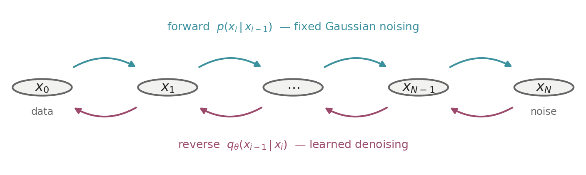
Variational Bounds and Score Matching: Two Routes to Denoising Diffusion
DDPM’s variational bound and Vincent’s denoising score matching, and why both end at the same regression.
stochastic calculus
diffusion models
generative AI
DDPM
ELBO
score matching
denoising score matching
Langevin MCMC
NCSN
The two routes to denoising diffusion — the ELBO of DDPM and denoising score matching — derived in full, with the noise-conditional score network and annealed Langevin sampling.
This series — Continuous-Time Generative Models
| Date | Title |
|---|---|
| Aug 10, 2026 | Itô's Lemma: From Black-Scholes to Diffusion Models |
| Sep 10, 2026 | Variational Bounds and Score Matching: Two Routes to Denoising Diffusion — you are here |
| forthcoming | SDE-Based Generative Models: The Merger |
| forthcoming | Flow Matching: Continuous Normalizing Flows for Practitioners |
| forthcoming | Langevin Dynamics, Fokker-Planck, and Diffusion Sampling |
| forthcoming | Conditional Generation: From Importance Sampling to Classifier-Free Guidance |
| forthcoming | The EDM Design Space: One Noise Level Behind Both |
This is post #2 in the series Continuous-Time Generative Models. It builds directly on post #1, which showed that the Denoising Diffusion Probabilistic Models (DDPM) forward process is a linear stochastic differential equation (SDE).
The forward process is the trivial direction: take a real image and keep adding noise to it, step by step, until it becomes pure noise. No neural network is needed for that; it is just adding Gaussians. The difficulty is the reverse direction. If that noising process could somehow be run backward — start from pure noise and remove the added Gaussians one layer at a time — it would generate data. Pure noise is the starting point, and generation is the journey back from it.
Post #1 developed the DDPM forward process end to end as a continuous-time object. It introduced the generative-modeling framing and diffusion models, defined Ho et al.’s DDPM forward (noising) process [1], and passed to the continuum limit to recover the continuous-time forward SDE — the Variance-Preserving (VP) SDE of Song et al. [2]. It used Itô to derive that process’s closed-form perturbation kernel and established why it matters: tractable training, by allowing single-step sampling of any x_t with an exact, known noise target. It again used Itô to derive the Fokker-Planck equation [3], [4] governing how the marginal distribution spreads. It named, but deliberately deferred, everything about the reverse direction.
Post #2 picks up there and covers the generative direction. On the variational (DDPM-native) side, it derives the reverse process’s training objective — the ELBO and its reduction to the noise-prediction loss L_{\text{simple}} [1] — then the denoising network that bound produces, and the ancestral sampling procedure that runs the reverse Markov chain, completing the DDPM story post #1 left open.
It then builds the other lineage in parallel. The catch — and the whole subject of the remaining post — is what this lineage must name that the DDPM reverse process never did: a single extra term telling each noisy sample which way the data originally lay. That term is the score, \nabla_x \log p_t. The post then shows that estimating it directly by score matching, and sampling with Langevin dynamics, works in principle but meets four pitfalls on real data. Denoising score matching [5] resolves them by perturbing the data and trading the expensive marginal score for a closed-form conditional one, but surfaces a new issue: a single noise level cannot serve both fidelity and signal. A ladder of noise levels settles that, giving Song and Ermon’s noise-conditional score network and annealed Langevin dynamics [6].
It closes by weighing what the reformulation from densities to scores bought and what it cost. In short: post #1 built the forward process and the objects the reverse process would need; post #2 reverses that process by two methods, leaving the merger of the two lineages to post #3.
Thesis: Generation is the time-reversal of noising, there are two ways to power that reversal, and this post develops both from first principles.
Roadmap
- Part 1: Develops the variational route end to end. It defines the DDPM reverse process, derives the ELBO that trains it, describes the denoising network the bound produces, and closes with ancestral sampling.
- Part 2: Develops the score-based route, which grew from a different question: how to model a density whose normalizing constant cannot be computed. It defines the score, trains it by score matching, samples with Langevin dynamics, and diagnoses the four pitfalls that hinder its effectiveness and scalability on real data.
- Part 3: Discusses denoising score matching in depth, which resolves those pitfalls by perturbing the data with noise and replacing the computationally inefficient marginal score with a closed-form conditional one (O(d) \to O(1)), but introduces the \sigma dilemma.
- Part 4: Resolves the \sigma dilemma with a ladder of noise levels, since no single noise level serves both fidelity and signal, giving the noise-conditional score network and annealed Langevin dynamics.
- Part 5: Weighs what the reformulation from densities to scores bought, and hands the two routes to post #3, which merges them.
1 Variational Generative Models
Post 1 built the DDPM forward process, a discrete Markov chain that adds Gaussian noise step by step. This Part turns that chain around.
1.1 Definitions
The DDPM sections of this Part use the objects below. The first group recaps the construction of post #1; the second group is new to this post and is developed in the sections that follow.
Carried over from post #1 (each developed in full in its Definitions section, the prior in its Assumptions section, and shown together in Figure 1):
- Partition: N steps, step index i \in \{0, 1, \ldots, N\}, continuous time t \in [0, 1].
- Data sample x_0: A clean sample from the data distribution, x_0 \sim p_0, with x_0 \in \mathbb{R}^d.
- State x_i / x_t: The partially-noised x_0, indexed by step or by time.
- Noise schedule \beta_i: The per-step noise variance, fixed in advance. \alpha_i = 1 - \beta_i is the per-step variance-retention factor, whose cumulative products are \bar\alpha_i = \prod_{s=1}^{i} \alpha_s and \bar\alpha(t).
- Forward transition p(x_i \mid x_{i-1}) and forward process p(x_{1:N} \mid x_0): One noising step, and the chain of them.
- Perturbation kernel p(x_i \mid x_0) / p_{0t}(x_t \mid x_0): The closed-form Gaussian recalled in the overview above.
- Noise \epsilon \sim \mathcal{N}(0, I): The standard Gaussian sample the perturbation kernel mixes into the state, x_i = \sqrt{\bar\alpha_i}\, x_0 + \sqrt{1 - \bar\alpha_i}\,\epsilon. It is what the denoising network is trained to recover.
- Prior p(x_N): The fixed, data-independent \mathcal{N}(0, I) the forward process approaches, and the distribution generation starts from.
New in this post:
- True reverse posterior q(x_{i-1} \mid x_i, x_0):
- The reverse conditional given the clean sample — tractable and Gaussian.
- The target the learned reverse step is matched against (Section 1.3).
- Learned reverse step q_\theta(x_{i-1} \mid x_i):
- A Gaussian denoising step with a network-predicted mean and a fixed schedule variance: q_\theta(x_{i-1} \mid x_i) = \mathcal{N}\!\big(x_{i-1};\ \mu_\theta(x_i, i),\ \sigma_i^2 I\big)
- Reverse Markov chain q_\theta(x_{0:N}):
- The chain of learned reverse steps run from the prior: q_\theta(x_{0:N}) = p(x_N) \prod_{i=1}^{N} q_\theta(x_{i-1} \mid x_i)
- Denoising network \epsilon_\theta(x_i, i) / \epsilon_\theta(x_t, t):
- The network whose output predicts the noise mixed into the state.
- The training objective regresses \epsilon_\theta onto the sampled \epsilon.
The lettering is systematic: p for the forward direction, q for the reverse, and a \theta subscript for a learned model. The prior keeps p because it is the distribution the forward process approaches, even though the reverse Markov chain starts from it.
1.2 DDPM reverse process (denoising)
As we saw in Section 4.3.2 of the last post, the reverse process is a learned reverse Markov chain that starts from pure noise p(x_N) = \mathcal{N}(0, I) and removes noise step by step, running the forward process in reverse.
We model those reverse steps using Gaussians with mean \mu_\theta and variance \sigma_i^2:
\boxed{q_\theta(x_{i-1} \mid x_i) = \mathcal{N}\!\big(x_{i-1};\, \mu_\theta(x_i, i),\, \sigma_i^2 I\big), \qquad q_\theta(x_{0:N}) = p(x_N) \prod_{i=1}^{N} q_\theta(x_{i-1} \mid x_i)} \tag{1}
The variance \sigma_i^2 is fixed beforehand, so the only entity to predict is its mean \mu_\theta, and we use a neural network for that.
Gaussian is the right shape for a reverse step because when \beta_i is small, the true reverse conditional q(x_{i-1} \mid x_i) is itself approximately Gaussian, as Sohl-Dickstein et al. showed [7]. Rigorously, the reverse of a diffusion is again a diffusion, a result due to Feller [7], [8] — and a diffusion’s infinitesimal transitions are Gaussian. This is the reason N must be large and each \beta_i small.
We fit \mu_\theta by minimizing the expected negative log-likelihood over the data, where the likelihood is q_\theta(x_0) = \int q_\theta(x_{0:N})\, dx_{1:N}. Like Kingma and Welling’s variational autoencoder [9], that integral is intractable because it integrates over all latent trajectories x_{1:N}, so we use a variational bound on the negative log-likelihood instead [1]. Further reparameterization converts that mean-prediction problem into noise \epsilon_\theta prediction, and \epsilon_\theta is what the network learns. A single network conditioned on the step index represents all N reverse steps.
The next section walks through the derivation in full, because seeing the full derivation is the cleanest evidence that “predict the noise” is not a heuristic but the parameterization the variational bound itself produces.
1.3 Training: ELBO loss
Step 1 — the variational bound:
As discussed in the previous section, we cannot compute the log-likelihood, but we can bound it. The device is the same one behind every evidence lower bound (ELBO): insert the forward process as a reference, use Jensen’s inequality, and get an expression built entirely from quantities we can evaluate.
We begin by expressing the marginal q_\theta(x_0) as an integral over the joint trajectory q_\theta(x_{0:N}), with the outer expectation over x_0 \sim p_0,
\mathbb{E}\big[-\log q_\theta(x_0)\big] = \mathbb{E}\!\left[-\log \int q_\theta(x_{0:N})\,dx_{1:N}\right]
Multiplying inside the integral by p(x_{1:N}\mid x_0)/p(x_{1:N}\mid x_0) = 1,
\mathbb{E}\big[-\log q_\theta(x_0)\big] = \mathbb{E}\!\left[-\log \int p(x_{1:N}\mid x_0)\,\frac{q_\theta(x_{0:N})}{p(x_{1:N}\mid x_0)}\,dx_{1:N}\right]
Recognizing the inner integral as an expectation over the forward process,
\mathbb{E}\big[-\log q_\theta(x_0)\big] = \mathbb{E}\!\left[-\log \mathbb{E}_{p(x_{1:N}\mid x_0)}\!\left[\frac{q_\theta(x_{0:N})}{p(x_{1:N}\mid x_0)}\right]\right]
By Jensen’s inequality, -\log\mathbb{E}[Y]\le\mathbb{E}[-\log Y],
\mathbb{E}\big[-\log q_\theta(x_0)\big] \le \mathbb{E}\!\left[\mathbb{E}_{p(x_{1:N}\mid x_0)}\!\left[-\log \frac{q_\theta(x_{0:N})}{p(x_{1:N}\mid x_0)}\right]\right]
Collapsing the nested expectations into a single expectation over the whole forward process p(x_{0:N}) = p_0(x_0)\,p(x_{1:N}\mid x_0), which the integrand now depends on in full,
\boxed{\mathbb{E}\big[-\log q_\theta(x_0)\big]\ \le\ \mathbb{E}_{p}\!\left[-\log \frac{q_\theta(x_{0:N})}{p(x_{1:N}\mid x_0)}\right]\ =:\ L} \tag{2}
The inequality is the only approximation step, an upper bound on the negative log-likelihood, so minimizing L pushes down on the quantity we care about.
Everything inside is now tractable: both q_\theta(x_{0:N}) and p(x_{1:N}\mid x_0) factorize into known Gaussians (Equation 1 and Eq. (28) of post #1). But in this raw form the bound is a single high-variance expectation over the entire trajectory. The next step reorganizes it into per-step terms that are individually more manageable.
Step 2 — one term per time step:
The Equation 2 bound compares two whole trajectories. Rewriting the forward process so each step is conditioned on x_0, the ratio factors into one term per time step. Each of those terms compares a single learned reverse step against the corresponding true reverse posterior through the Kullback–Leibler (KL) divergence D_{\mathrm{KL}}(p \,\|\, q) := \mathbb{E}_p[\log p - \log q]. That divergence is non-negative and vanishes only when p = q. A global objective becomes a sum of clean local ones.
\begin{aligned} L=\mathbb{E}_p\Big[\ &\underbrace{D_{\mathrm{KL}}\!\big(p(x_N\mid x_0)\,\|\,p(x_N)\big)}_{\textstyle L_N}\\[4pt] &+\sum_{i=2}^{N}\underbrace{D_{\mathrm{KL}}\!\big(q(x_{i-1}\mid x_i,x_0)\,\|\,q_\theta(x_{i-1}\mid x_i)\big)}_{\textstyle L_{i-1}}\\[4pt] &\underbrace{-\ \log q_\theta(x_0\mid x_1)}_{\textstyle L_0}\ \Big] \end{aligned} \tag{3}
The three parts are:
- L_N compares the fully-noised p(x_N \mid x_0) against the standard normal p(x_N). It has no parameters — the forward process is fixed — so it is a constant and can be ignored in training. With a good schedule it is also nearly zero, since x_N is almost \mathcal{N}(0, I).
- L_{i-1} is the workhorse: for each i, a KL divergence between the true reverse posterior q(x_{i-1} \mid x_i, x_0) and the learned one q_\theta(x_{i-1} \mid x_i). This is what training minimizes.
- L_0 is a final likelihood term for recovering the data, which are discrete pixel values, from x_1 — a small edge term, given its own discrete decoder.
NoteProof: the per-time-step decomposition
Substituting the reverse Markov chain of Equation 1 and the forward process, the chain of the forward transitions of Eq. (28) of post #1, into Equation 2,
L = \mathbb{E}_p\!\left[-\log \frac{p(x_N) \prod_{i=1}^{N} q_\theta(x_{i-1} \mid x_i)}{\prod_{i=1}^{N} p(x_i \mid x_{i-1})}\right]
Pairing the two products term by term into a single product of per-step ratios,
L = \mathbb{E}_p\!\left[-\log \left( p(x_N) \prod_{i=1}^{N} \frac{q_\theta(x_{i-1} \mid x_i)}{p(x_i \mid x_{i-1})} \right)\right]
Converting the logarithm of that product into a sum of logarithms, which leaves the prior p(x_N) as a term of its own,
L = \mathbb{E}_p\!\left[-\log p(x_N) - \sum_{i \ge 1} \log \frac{q_\theta(x_{i-1} \mid x_i)}{p(x_i \mid x_{i-1})}\right]
Splitting off the i = 1 term — the Bayes rewrite applied next is valid only for i \ge 2; at i = 1 it would condition x_0 on itself,
L = \mathbb{E}_p\!\left[-\log p(x_N) - \sum_{i \ge 2} \log \frac{q_\theta(x_{i-1} \mid x_i)}{p(x_i \mid x_{i-1})} - \log \frac{q_\theta(x_0 \mid x_1)}{p(x_1 \mid x_0)}\right]
Conditioning each forward transition for i \ge 2 on x_0, which changes nothing because the chain is Markov, p(x_i \mid x_{i-1}) = p(x_i \mid x_{i-1}, x_0),
L = \mathbb{E}_p\!\left[-\log p(x_N) - \sum_{i \ge 2} \log \frac{q_\theta(x_{i-1} \mid x_i)}{p(x_i \mid x_{i-1}, x_0)} - \log \frac{q_\theta(x_0 \mid x_1)}{p(x_1 \mid x_0)}\right]
Applying Bayes’ rule to that conditioned transition, p(x_i \mid x_{i-1}, x_0) = \dfrac{q(x_{i-1} \mid x_i, x_0)\, p(x_i \mid x_0)}{p(x_{i-1} \mid x_0)},
L = \mathbb{E}_p\!\left[-\log p(x_N) - \sum_{i \ge 2} \log \left( \frac{q_\theta(x_{i-1} \mid x_i)}{q(x_{i-1} \mid x_i, x_0)} \cdot \frac{p(x_{i-1} \mid x_0)}{p(x_i \mid x_0)} \right) - \log \frac{q_\theta(x_0 \mid x_1)}{p(x_1 \mid x_0)}\right]
Splitting the summand’s logarithm back into its two factors,
L = \mathbb{E}_p\!\left[-\log p(x_N) - \sum_{i \ge 2} \log \frac{q_\theta(x_{i-1} \mid x_i)}{q(x_{i-1} \mid x_i, x_0)} - \sum_{i \ge 2} \log \frac{p(x_{i-1} \mid x_0)}{p(x_i \mid x_0)} - \log \frac{q_\theta(x_0 \mid x_1)}{p(x_1 \mid x_0)}\right]
Telescoping the second sum across i = 2, \ldots, N, where every interior factor cancels against its neighbour and only the endpoints survive,
L = \mathbb{E}_p\!\left[-\log p(x_N) - \sum_{i \ge 2} \log \frac{q_\theta(x_{i-1} \mid x_i)}{q(x_{i-1} \mid x_i, x_0)} - \log \frac{p(x_1 \mid x_0)}{p(x_N \mid x_0)} - \log \frac{q_\theta(x_0 \mid x_1)}{p(x_1 \mid x_0)}\right]
Combining those last two logarithms,
L = \mathbb{E}_p\!\left[-\log p(x_N) - \sum_{i \ge 2} \log \frac{q_\theta(x_{i-1} \mid x_i)}{q(x_{i-1} \mid x_i, x_0)} - \log \frac{p(x_1 \mid x_0)\, q_\theta(x_0 \mid x_1)}{p(x_N \mid x_0)\, p(x_1 \mid x_0)}\right]
Cancelling p(x_1 \mid x_0),
L = \mathbb{E}_p\!\left[-\log p(x_N) - \sum_{i \ge 2} \log \frac{q_\theta(x_{i-1} \mid x_i)}{q(x_{i-1} \mid x_i, x_0)} - \log \frac{q_\theta(x_0 \mid x_1)}{p(x_N \mid x_0)}\right]
Separating that logarithm,
L = \mathbb{E}_p\!\left[-\log p(x_N) + \log p(x_N \mid x_0) - \sum_{i \ge 2} \log \frac{q_\theta(x_{i-1} \mid x_i)}{q(x_{i-1} \mid x_i, x_0)} - \log q_\theta(x_0 \mid x_1)\right]
Pairing p(x_N \mid x_0) with the prior term,
L = \mathbb{E}_p\!\left[\log \frac{p(x_N \mid x_0)}{p(x_N)} - \sum_{i \ge 2} \log \frac{q_\theta(x_{i-1} \mid x_i)}{q(x_{i-1} \mid x_i, x_0)} - \log q_\theta(x_0 \mid x_1)\right]
Inverting the summand so that each ratio carries the true posterior on top,
L = \mathbb{E}_p\!\left[\log \frac{p(x_N \mid x_0)}{p(x_N)} + \sum_{i \ge 2} \log \frac{q(x_{i-1} \mid x_i, x_0)}{q_\theta(x_{i-1} \mid x_i)} - \log q_\theta(x_0 \mid x_1)\right]
Under the forward process x_N \mid x_0 has law p(x_N \mid x_0) and x_{i-1} \mid x_i, x_0 has law q(x_{i-1} \mid x_i, x_0), so taking the trajectory expectation of each of the first two terms one variable at a time leaves the expectation of a log-ratio under the density in its numerator, which is a KL divergence. Naming them L_N = D_{\mathrm{KL}}(p(x_N \mid x_0) \| p(x_N)) and L_{i-1} = D_{\mathrm{KL}}(q(x_{i-1} \mid x_i, x_0) \| q_\theta(x_{i-1} \mid x_i)), with the remaining term L_0 = -\log q_\theta(x_0 \mid x_1), gives Equation 3. \square
Step 3 — the true reverse posterior is Gaussian:
The true reverse conditional q(x_{i-1} \mid x_i) without x_0 is intractable but with x_0 given it is a tractable Gaussian:
\boxed{q(x_{i-1} \mid x_i, x_0) = \mathcal{N}\big(x_{i-1};\, \tilde\mu_i(x_i, x_0),\, \tilde\beta_i I\big)} \tag{4}
with mean and variance
\boxed{\tilde\mu_i(x_i, x_0) = \frac{\sqrt{\bar\alpha_{i-1}}\,\beta_i}{1-\bar\alpha_i}\, x_0 + \frac{\sqrt{\alpha_i}\,(1-\bar\alpha_{i-1})}{1-\bar\alpha_i}\, x_i, \qquad \tilde\beta_i = \frac{1-\bar\alpha_{i-1}}{1-\bar\alpha_i}\,\beta_i} \tag{5}
The mean is a linear combination of the clean point x_0 and the current noisy point x_i with positive coefficients; the variance \tilde\beta_i depends only on the fixed schedule. This is the target the network’s reverse step must match.
Thus, all KL divergences in Equation 3 are comparisons between Gaussians.
NoteProof: the reverse posterior is Gaussian
Conditioning on x_0 throughout, Bayes’ rule gives q(x_{i-1} \mid x_i, x_0) \propto p(x_i \mid x_{i-1}, x_0)\, p(x_{i-1} \mid x_0), and the Markov property reduces the first factor to the forward transition, p(x_i \mid x_{i-1}, x_0) = p(x_i \mid x_{i-1}).
Both factors are Gaussian in x_{i-1} — the first is the forward step of Eq. (28) of post #1, the second the perturbation kernel of Appendix A.7 of post #1,
p(x_i \mid x_{i-1}) = \mathcal{N}\!\left(x_i;\, \sqrt{\alpha_i}\, x_{i-1},\, \beta_i I\right), \qquad p(x_{i-1} \mid x_0) = \mathcal{N}\!\left(x_{i-1};\, \sqrt{\bar\alpha_{i-1}}\, x_0,\, (1 - \bar\alpha_{i-1}) I\right)
A product of Gaussian densities is Gaussian, so it suffices to carry the exponent through to completed-square form. Both covariances are isotropic, so the exponent is a sum of one-coordinate terms of the same form, one for each of the d coordinates of the state; the computation below is written for a single coordinate, with x_i, x_{i-1} and x_0 standing for that coordinate’s components. Multiplying the two densities, their exponents add,
\log q(x_{i-1} \mid x_i, x_0) = -\tfrac{1}{2}\!\left[\frac{(x_i - \sqrt{\alpha_i}\, x_{i-1})^2}{\beta_i} + \frac{(x_{i-1} - \sqrt{\bar\alpha_{i-1}}\, x_0)^2}{1 - \bar\alpha_{i-1}}\right] + \text{const}
Expanding both squares,
\log q(x_{i-1} \mid x_i, x_0) = -\tfrac{1}{2}\!\left[\frac{x_i^2 - 2\sqrt{\alpha_i}\, x_i x_{i-1} + \alpha_i x_{i-1}^2}{\beta_i} + \frac{x_{i-1}^2 - 2\sqrt{\bar\alpha_{i-1}}\, x_0 x_{i-1} + \bar\alpha_{i-1} x_0^2}{1 - \bar\alpha_{i-1}}\right] + \text{const}
Collecting powers of x_{i-1}, with the x_{i-1}-free terms absorbed into the constant,
\log q(x_{i-1} \mid x_i, x_0) = -\tfrac{1}{2}\!\left[\left(\frac{\alpha_i}{\beta_i} + \frac{1}{1 - \bar\alpha_{i-1}}\right) x_{i-1}^2 - 2\left(\frac{\sqrt{\alpha_i}}{\beta_i}\, x_i + \frac{\sqrt{\bar\alpha_{i-1}}}{1 - \bar\alpha_{i-1}}\, x_0\right) x_{i-1}\right] + \text{const}
Combining the quadratic coefficient over a common denominator,
\log q(x_{i-1} \mid x_i, x_0) = -\tfrac{1}{2}\!\left[\frac{\alpha_i (1 - \bar\alpha_{i-1}) + \beta_i}{\beta_i (1 - \bar\alpha_{i-1})}\, x_{i-1}^2 - 2\left(\frac{\sqrt{\alpha_i}}{\beta_i}\, x_i + \frac{\sqrt{\bar\alpha_{i-1}}}{1 - \bar\alpha_{i-1}}\, x_0\right) x_{i-1}\right] + \text{const}
Applying the identity \alpha_i(1 - \bar\alpha_{i-1}) + \beta_i = 1 - \bar\alpha_i, which follows from \beta_i = 1 - \alpha_i and \bar\alpha_i = \alpha_i \bar\alpha_{i-1},
\log q(x_{i-1} \mid x_i, x_0) = -\tfrac{1}{2}\!\left[\frac{1 - \bar\alpha_i}{\beta_i (1 - \bar\alpha_{i-1})}\, x_{i-1}^2 - 2\left(\frac{\sqrt{\alpha_i}}{\beta_i}\, x_i + \frac{\sqrt{\bar\alpha_{i-1}}}{1 - \bar\alpha_{i-1}}\, x_0\right) x_{i-1}\right] + \text{const}
Factoring that coefficient out of the bracket and writing \tilde\beta_i for its reciprocal,
\log q(x_{i-1} \mid x_i, x_0) = -\frac{1}{2\tilde\beta_i}\!\left[x_{i-1}^2 - 2\, \tilde\beta_i \left(\frac{\sqrt{\alpha_i}}{\beta_i}\, x_i + \frac{\sqrt{\bar\alpha_{i-1}}}{1 - \bar\alpha_{i-1}}\, x_0\right) x_{i-1}\right] + \text{const}, \qquad \tilde\beta_i = \frac{\beta_i (1 - \bar\alpha_{i-1})}{1 - \bar\alpha_i}
Writing \tilde\mu_i for what now multiplies 2x_{i-1},
\log q(x_{i-1} \mid x_i, x_0) = -\frac{1}{2\tilde\beta_i}\!\left[x_{i-1}^2 - 2\, \tilde\mu_i\, x_{i-1}\right] + \text{const}, \qquad \tilde\mu_i = \tilde\beta_i \left(\frac{\sqrt{\alpha_i}}{\beta_i}\, x_i + \frac{\sqrt{\bar\alpha_{i-1}}}{1 - \bar\alpha_{i-1}}\, x_0\right)
Completing the square, with the \tilde\mu_i^2 it produces absorbed into the constant,
\log q(x_{i-1} \mid x_i, x_0) = -\frac{(x_{i-1} - \tilde\mu_i)^2}{2\tilde\beta_i} + \text{const}
The right-hand side is the exponent of \mathcal{N}(x_{i-1};\, \tilde\mu_i,\, \tilde\beta_i I), so the posterior is Gaussian and \tilde\beta_i is already the variance of Equation 5. Substituting \tilde\beta_i into \tilde\mu_i,
\tilde\mu_i = \frac{\beta_i (1 - \bar\alpha_{i-1})}{1 - \bar\alpha_i}\left(\frac{\sqrt{\alpha_i}}{\beta_i}\, x_i + \frac{\sqrt{\bar\alpha_{i-1}}}{1 - \bar\alpha_{i-1}}\, x_0\right)
Multiplying out, with \beta_i and 1 - \bar\alpha_{i-1} cancelling in turn,
\tilde\mu_i = \frac{\sqrt{\bar\alpha_{i-1}}\,\beta_i}{1 - \bar\alpha_i}\, x_0 + \frac{\sqrt{\alpha_i}\,(1 - \bar\alpha_{i-1})}{1 - \bar\alpha_i}\, x_i
which is the mean of Equation 5. \square
Step 4 — from KL to mean matching:
Ho et al. [1] fix the model’s reverse covariance \Sigma_\theta (the covariance of the learned reverse step) to the schedule constant, \Sigma_\theta = \sigma_i^2 I. They report two choices: \sigma_i^2 = \beta_i and the posterior variance \sigma_i^2 = \tilde\beta_i of Equation 5. These are the two extremes, optimal respectively for x_0 \sim \mathcal{N}(0, I) and for a single fixed x_0, and the paper reports comparable sample quality for both in practice.
As the target and the model reverse step are both isotropic Gaussians, and the model’s variance is a fixed schedule constant, computing the KL in closed form then turns into the squared distance between the two means. The whole training term collapses to matching the predicted mean \mu_\theta(x_i, i) with the true posterior mean \tilde\mu_i(x_i, x_0).
L_{i-1} = \mathbb{E}_p\!\left[\frac{1}{2\sigma_i^2}\big\lVert \tilde\mu_i(x_i, x_0) - \mu_\theta(x_i, i)\big\rVert^2\right] + C \tag{6}
NoteProof: the KL divergence between two isotropic Gaussians
Write q = \mathcal{N}(\tilde\mu_i, \tilde\beta_i I) and q_\theta = \mathcal{N}(\mu_\theta, \sigma_i^2 I), both on \mathbb{R}^d.
By the definition of the KL divergence,
D_{\mathrm{KL}}(q \,\|\, q_\theta) = \mathbb{E}_q\big[\log q(x_{i-1}) - \log q_\theta(x_{i-1})\big]
Substituting the two Gaussian log-densities,
D_{\mathrm{KL}}(q \,\|\, q_\theta) = \mathbb{E}_q\!\left[\frac{d}{2}\log\frac{\sigma_i^2}{\tilde\beta_i} - \frac{\lVert x_{i-1} - \tilde\mu_i\rVert^2}{2\tilde\beta_i} + \frac{\lVert x_{i-1} - \mu_\theta\rVert^2}{2\sigma_i^2}\right]
By linearity,
D_{\mathrm{KL}}(q \,\|\, q_\theta) = \frac{d}{2}\log\frac{\sigma_i^2}{\tilde\beta_i} - \frac{\mathbb{E}_q\big[\lVert x_{i-1} - \tilde\mu_i\rVert^2\big]}{2\tilde\beta_i} + \frac{\mathbb{E}_q\big[\lVert x_{i-1} - \mu_\theta\rVert^2\big]}{2\sigma_i^2}
Substituting \mathbb{E}_q\big[\lVert x_{i-1} - \tilde\mu_i\rVert^2\big] = d\,\tilde\beta_i, the trace of the covariance,
D_{\mathrm{KL}}(q \,\|\, q_\theta) = \frac{d}{2}\log\frac{\sigma_i^2}{\tilde\beta_i} - \frac{d}{2} + \frac{\mathbb{E}_q\big[\lVert x_{i-1} - \mu_\theta\rVert^2\big]}{2\sigma_i^2}
Substituting the bias-variance split \mathbb{E}_q\big[\lVert x_{i-1} - \mu_\theta\rVert^2\big] = d\,\tilde\beta_i + \lVert \tilde\mu_i - \mu_\theta\rVert^2,
D_{\mathrm{KL}}(q \,\|\, q_\theta) = \frac{d}{2}\log\frac{\sigma_i^2}{\tilde\beta_i} - \frac{d}{2} + \frac{d\,\tilde\beta_i + \lVert \tilde\mu_i - \mu_\theta\rVert^2}{2\sigma_i^2}
Separating the mean gap from the variance terms,
D_{\mathrm{KL}}(q \,\|\, q_\theta) = \frac{1}{2\sigma_i^2}\big\lVert \tilde\mu_i - \mu_\theta\big\rVert^2 + \frac{d}{2}\left(\frac{\tilde\beta_i}{\sigma_i^2} - 1 + \log\frac{\sigma_i^2}{\tilde\beta_i}\right)
The first term is the squared distance between the means, scaled by the model’s fixed variance; the second depends on the two variances alone. \square
Here C = \tfrac{d}{2}\big(\tilde\beta_i/\sigma_i^2 - 1 + \log(\sigma_i^2/\tilde\beta_i)\big), the variance term of that proof. It is free of \theta, so it drops out of the optimization, and it vanishes when \sigma_i^2 = \tilde\beta_i.
Fixing \Sigma_\theta = \sigma_i^2 I rather than learning it is what produces the clean squared-error form. Learning the variance is possible and later work does it, but Ho et al.’s finding was that fixing it to the schedule and only predicting the mean works excellently — and it is what makes the objective reduce to a pure regression.
Step 5 — from mean matching to noise matching:
As per Equation 5, the target mean \tilde\mu_i depends on both x_0 and x_i. x_i is available at generation time while x_0 is not, but the closed form ties them together with the noise, x_i = \sqrt{\bar\alpha_i}\, x_0 + \sqrt{1 - \bar\alpha_i}\,\epsilon, and solving it for x_0 gives x_0 = (x_i - \sqrt{1-\bar\alpha_i}\,\epsilon)/\sqrt{\bar\alpha_i}.
Substituting that expression for x_0 into the true mean of Equation 5,
\tilde\mu_i = \frac{\sqrt{\bar\alpha_{i-1}}\,\beta_i}{1 - \bar\alpha_i}\cdot \frac{x_i - \sqrt{1 - \bar\alpha_i}\,\epsilon}{\sqrt{\bar\alpha_i}} + \frac{\sqrt{\alpha_i}\,(1 - \bar\alpha_{i-1})}{1 - \bar\alpha_i}\, x_i
Using \sqrt{\bar\alpha_{i-1}}/\sqrt{\bar\alpha_i} = 1/\sqrt{\alpha_i}, which follows from \bar\alpha_i = \alpha_i \bar\alpha_{i-1},
\tilde\mu_i = \frac{\beta_i}{\sqrt{\alpha_i}\,(1 - \bar\alpha_i)}\big(x_i - \sqrt{1 - \bar\alpha_i}\,\epsilon\big) + \frac{\sqrt{\alpha_i}\,(1 - \bar\alpha_{i-1})}{1 - \bar\alpha_i}\, x_i
Distributing the first coefficient,
\tilde\mu_i = \frac{\beta_i}{\sqrt{\alpha_i}\,(1 - \bar\alpha_i)}\, x_i - \frac{\beta_i}{\sqrt{\alpha_i}\,\sqrt{1 - \bar\alpha_i}}\,\epsilon + \frac{\sqrt{\alpha_i}\,(1 - \bar\alpha_{i-1})}{1 - \bar\alpha_i}\, x_i
Collecting the two x_i terms over the common denominator \sqrt{\alpha_i}\,(1 - \bar\alpha_i),
\tilde\mu_i = \frac{\beta_i + \alpha_i(1 - \bar\alpha_{i-1})}{\sqrt{\alpha_i}\,(1 - \bar\alpha_i)}\, x_i - \frac{\beta_i}{\sqrt{\alpha_i}\,\sqrt{1 - \bar\alpha_i}}\,\epsilon
Applying \alpha_i(1 - \bar\alpha_{i-1}) + \beta_i = 1 - \bar\alpha_i to that numerator, which cancels the 1 - \bar\alpha_i,
\tilde\mu_i = \frac{1}{\sqrt{\alpha_i}}\, x_i - \frac{\beta_i}{\sqrt{\alpha_i}\,\sqrt{1-\bar\alpha_i}}\,\epsilon
Factoring out 1/\sqrt{\alpha_i},
\tilde\mu_i = \frac{1}{\sqrt{\alpha_i}}\left(x_i - \frac{\beta_i}{\sqrt{1-\bar\alpha_i}}\,\epsilon\right) \tag{7}
Since \tilde\mu_i is the mean that \mu_\theta must match, this form reveals what \mu_\theta must predict — given x_i, it must produce \tfrac{1}{\sqrt{\alpha_i}}\big(x_i - \tfrac{\beta_i}{\sqrt{1-\bar\alpha_i}}\,\epsilon\big). Because x_i is available to the network as its input, the only unknown it must supply is \epsilon. So choosing a function approximator \epsilon_\theta(x_i, i) intended to predict \epsilon from x_i, and using the same form as \tilde\mu_i, we get:
\mu_\theta(x_i, i) = \frac{1}{\sqrt{\alpha_i}}\left(x_i - \frac{\beta_i}{\sqrt{1-\bar\alpha_i}}\,\epsilon_\theta(x_i, i)\right) \tag{8}
Subtracting Equation 8 from Equation 7,
\tilde\mu_i - \mu_\theta = \frac{1}{\sqrt{\alpha_i}}\left(x_i - \frac{\beta_i}{\sqrt{1-\bar\alpha_i}}\,\epsilon\right) - \frac{1}{\sqrt{\alpha_i}}\left(x_i - \frac{\beta_i}{\sqrt{1-\bar\alpha_i}}\,\epsilon_\theta\right)
Cancelling the x_i terms,
\tilde\mu_i - \mu_\theta = \frac{1}{\sqrt{\alpha_i}}\cdot\frac{\beta_i}{\sqrt{1-\bar\alpha_i}}\,\epsilon_\theta - \frac{1}{\sqrt{\alpha_i}}\cdot\frac{\beta_i}{\sqrt{1-\bar\alpha_i}}\,\epsilon
Factoring out the common scalar,
\tilde\mu_i - \mu_\theta = \frac{1}{\sqrt{\alpha_i}}\cdot\frac{\beta_i}{\sqrt{1-\bar\alpha_i}}\big(\epsilon_\theta - \epsilon\big) \tag{9}
So the squared error between the means is, up to a scalar, the squared error between the true noise and the predicted noise. The network’s whole job is to look at a noisy image and say which noise was added to make it.
Step 6 — the weighted noise-prediction loss:
Now that the means are settled, let’s get back to L_{i-1} in the state we left it in Equation 6. Its integrand depends only on (x_i, x_0), and under the forward process that pair has the law of x_0 \sim p_0 with x_i = \sqrt{\bar\alpha_i}\, x_0 + \sqrt{1 - \bar\alpha_i}\, \epsilon, \epsilon \sim \mathcal{N}(0, I), so the trajectory expectation reduces to one over (x_0, \epsilon). Changing the measure,
L_{i-1} = \mathbb{E}_{x_0,\epsilon}\!\left[\frac{1}{2\sigma_i^2}\big\lVert \tilde\mu_i - \mu_\theta\big\rVert^2\right] + C
Substituting \tilde\mu_i - \mu_\theta from Equation 9,
L_{i-1} = \mathbb{E}_{x_0,\epsilon}\!\left[\frac{1}{2\sigma_i^2}\left\lVert \frac{1}{\sqrt{\alpha_i}}\,\frac{\beta_i}{\sqrt{1-\bar\alpha_i}}\,\big(\epsilon_\theta(x_i, i)-\epsilon\big)\right\rVert^2\right] + C
Dropping C, which does not depend on \theta, and writing L_{i-1} from here on for the \theta-dependent part it leaves,
L_{i-1} = \mathbb{E}_{x_0,\epsilon}\!\left[\frac{1}{2\sigma_i^2}\left\lVert \frac{1}{\sqrt{\alpha_i}}\,\frac{\beta_i}{\sqrt{1-\bar\alpha_i}}\,\big(\epsilon_\theta(x_i, i)-\epsilon\big)\right\rVert^2\right]
Pulling the scalar out of the norm,
L_{i-1} = \mathbb{E}_{x_0,\epsilon}\!\left[\frac{1}{2\sigma_i^2}\cdot\frac{1}{\alpha_i}\cdot\frac{\beta_i^2}{1-\bar\alpha_i}\,\big\lVert \epsilon_\theta(x_i, i)-\epsilon\big\rVert^2\right]
Naming the scalar \lambda_i, and using \lVert \epsilon_\theta-\epsilon\rVert = \lVert \epsilon-\epsilon_\theta\rVert,
L_{i-1} = \mathbb{E}_{x_0,\epsilon}\!\left[\lambda_i\,\big\lVert \epsilon-\epsilon_\theta(x_i, i)\big\rVert^2\right] \tag{10}
where
\lambda_i = \frac{\beta_i^2}{2\sigma_i^2\,\alpha_i\,(1-\bar\alpha_i)}
and, under \mathbb{E}_{x_0, \epsilon}, the state is the one-step sample x_i = \sqrt{\bar\alpha_i}\, x_0 + \sqrt{1-\bar\alpha_i}\,\epsilon throughout.
Step 7 — assembling the bound:
Now that L_{i-1} has reached its final form, let’s get back to the total loss objective in Equation 3, which had three terms: L_N, L_{i-1}, and L_0. L_{i-1} we just derived, so let’s focus on L_N and L_0.
L_N is independent of \theta, so there is nothing to optimize there during training; it is carried into the assembled bound below as a constant.
Unlike the L_{i-1} terms, which were KLs between two Gaussians, L_0 is a simple likelihood for the last reverse step that produces the actual image. So the final step needs a discrete decoder that turns the continuous x_1 into a probability over discrete pixels, and Ho et al. did it by splitting the Gaussian \mathcal{N}\big(x_0;\, \mu_\theta(x_1, 1),\, \sigma_1^2 I\big) (the final reverse step’s distribution, whose input x_1 is the output of the second-last step) into bins corresponding to the number of pixel levels. Then the probability of a discrete pixel value is that Gaussian’s mass over the bin around it.
Each L_{i-1} substitution drops the \theta-free constant of Step 6, and \text{const} below is the sum of those constants. Assembling the three terms of Equation 3 under \mathbb{E}_p, with Equation 10 for each L_{i-1},
\begin{aligned} L(\theta) &= \text{const} + \underbrace{\mathbb{E}_{p_0}\big[D_{\mathrm{KL}}\big(p(x_N \mid x_0)\,\|\,p(x_N)\big)\big]}_{\textstyle L_N:\ \text{no } \theta,\ \text{a constant}} \\[4pt] &\quad+\underbrace{\sum_{i=2}^{N}\mathbb{E}_{x_0,\epsilon}\Big[\lambda_i\big\lVert \epsilon-\epsilon_\theta(x_i, i)\big\rVert^2\Big]}_{\textstyle \sum L_{i-1}:\ \text{the noise-prediction terms}} \\[4pt] &\quad\underbrace{-\ \mathbb{E}_{x_0,\epsilon}\big[\log q_\theta(x_0 \mid x_1)\big]}_{\textstyle L_0:\ \text{the discrete decoder}} \end{aligned} \tag{11}
Step 8 — the simple objective:
Ho et al.’s decisive simplification [1] is to set the weight \lambda_i = 1. The theoretically-correct weight makes the network attend to imperceptible fine-detail denoising at small noise levels; the unweighted form rebalances effort toward the larger, more consequential ones, and trains better in practice — at the price that the objective is no longer a strict likelihood bound.
Two further reductions remain. The constant L_N is dropped. And L_0’s discrete decoder is replaced by an i = 1 copy of the same noise-prediction squared error, so every level, edge included, is one uniform mean-squared error. This is an approximation of L_0, not a new target. Approximating the decoder’s bin integral by the Gaussian density times the bin width, ignoring \sigma_1^2 and edge effects, turns L_0 into \tfrac{1}{2\sigma_1^2}\lVert x_0 - \mu_\theta(x_1, 1)\rVert^2 up to a constant, and since \tilde\beta_1 = 0 and \tilde\mu_1 = x_0, Equation 9 makes that \lambda_1 \lVert \epsilon - \epsilon_\theta(x_1, 1)\rVert^2 — the i = 1 member of Equation 10. Finally, the sum over levels is written as an expectation by sampling the step i uniformly. The result is DDPM’s simple objective,
\boxed{L_{\text{simple}}(\theta) = \mathbb{E}_{i,\, x_0,\, \epsilon}\Big[\big\lVert \epsilon - \epsilon_\theta\!\big(\sqrt{\bar\alpha_i}\, x_0 + \sqrt{1 - \bar\alpha_i}\, \epsilon,\ i\big)\big\rVert^2\Big]} \tag{12}
with i sampled uniformly from \{1, \ldots, N\}, x_0 from the data distribution p_0, and \epsilon \sim \mathcal{N}(0, I). \square
1.4 The denoising network
Input: The model is a neural network with parameters \theta, the denoising network. Its input is a noised state x_i together with the step index i that says how noised it is.
Output: The network outputs a vector of the same shape as x_i: a prediction of the noise that was mixed into x_0 to produce x_i. We write this output \epsilon_\theta(x_i, i).
Prediction: When we built x_i by one-step sampling, we sampled the noise \epsilon ourselves — so we know the true value exactly. The network does not see \epsilon; it sees only x_i and i, and must predict it. Its prediction \epsilon_\theta(x_i, i) is compared against the \epsilon we sampled, the ground truth (Figure 2).
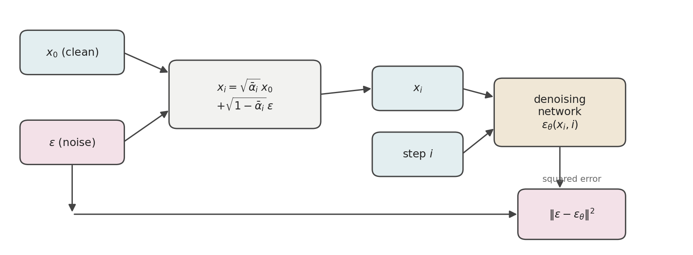
Algorithm 1 — Training [1]:
1: repeat
2: x_0 \sim p_0(x_0)
3: i \sim \mathrm{Uniform}(\{1, \ldots, N\})
4: \epsilon \sim \mathcal{N}(0, I)
5: Take gradient descent step on \nabla_\theta \big\lVert \epsilon - \epsilon_\theta\big(\sqrt{\bar\alpha_i}\, x_0 + \sqrt{1-\bar\alpha_i}\,\epsilon,\ i\big)\big\rVert^2
6: until converged
2: x_0 \sim p_0(x_0)
3: i \sim \mathrm{Uniform}(\{1, \ldots, N\})
4: \epsilon \sim \mathcal{N}(0, I)
5: Take gradient descent step on \nabla_\theta \big\lVert \epsilon - \epsilon_\theta\big(\sqrt{\bar\alpha_i}\, x_0 + \sqrt{1-\bar\alpha_i}\,\epsilon,\ i\big)\big\rVert^2
6: until converged
1.5 Sampling: ancestral sampling
With \epsilon_\theta trained, generation runs the reverse Markov chain: start from noise and, for i = N down to 1, take one learned reverse step.
Algorithm 2 — Sampling [1]:
1: x_N \sim \mathcal{N}(0, I)
2: for i = N, \ldots, 1 do
3: z \sim \mathcal{N}(0, I) if i > 1, else z = 0
4: x_{i-1} = \frac{1}{\sqrt{\alpha_i}}\left(x_i - \frac{\beta_i}{\sqrt{1-\bar\alpha_i}}\,\epsilon_\theta(x_i, i)\right) + \sigma_i z
5: end for
6: return x_0
2: for i = N, \ldots, 1 do
3: z \sim \mathcal{N}(0, I) if i > 1, else z = 0
4: x_{i-1} = \frac{1}{\sqrt{\alpha_i}}\left(x_i - \frac{\beta_i}{\sqrt{1-\bar\alpha_i}}\,\epsilon_\theta(x_i, i)\right) + \sigma_i z
5: end for
6: return x_0
Line 4 is one sample from the learned reverse step. The expression before \sigma_i z is its mean \mu_\theta(x_i, i), parameterized as in Equation 8. The factor \sigma_i scales the noise, so the step’s variance \sigma_i^2 matches the fixed schedule constant, as Step 4 of the ELBO loss derivation established. Line 4 is therefore the reparameterized sample x_{i-1} \sim \mathcal{N}\big(\mu_\theta(x_i, i),\, \sigma_i^2 I\big). The only unknown in \mu_\theta is \epsilon_\theta, which the network predicts. This stepwise sample-from-each-conditional scheme is ancestral sampling, the native sampler of the reverse Markov chain.
2 Score-Based Generative Models
DDPMs achieve tractability by fixing the structure of the model in advance. The forward process is a Markov chain of Gaussian steps with a hand-chosen noise schedule, which gives a closed-form perturbation kernel p(x_i \mid x_0) and a tractable true reverse posterior q(x_{i-1} \mid x_i, x_0). Two costs follow. First, the model family is restricted: the number of steps, the noise schedule, and the Gaussian form of every conditional are fixed before training, and only the mean of each reverse step is learned. A chain of Gaussians can represent a general distribution, but only as the number of steps grows large, and each step requires one evaluation of the network in ancestral sampling. Greater expressiveness therefore comes at a proportionally higher cost for that sampler. Second, the training objective is not the log-likelihood but a lower bound on it, and the gap between them is never computed. That gap is \mathbb{E}_{p_0}\big[D_{\mathrm{KL}}\big(p(x_{1:N}\mid x_0)\,\|\,q_\theta(x_{1:N}\mid x_0)\big)\big], where q_\theta(x_{1:N}\mid x_0) := q_\theta(x_{0:N}) / q_\theta(x_0) is the reverse Markov chain’s trajectory conditional. Subtracting -\log q_\theta(x_0) from the integrand of Equation 2 produces it. This is an approximation in the objective itself, separate from the estimation error that finite data and finite capacity introduce in any method.
Energy-based models remove both constraints by discarding the structure that produced them. The model is a single scalar function E_\theta(x), parameterized by an unconstrained neural network, with the distribution defined as p_\theta(x) \propto e^{-E_\theta(x)}. There is no chain, so no step count to trade against expressiveness; no schedule to fix in advance; and no requirement that any component be Gaussian or invertible. The whole function is learned rather than the mean of each step in a fixed sequence, and the objective is the log-likelihood itself rather than a bound on it.
Theoretically that resolves what constrained the DDPM. Practically it introduces a problem of its own, and it is in the proportionality sign. Turning e^{-E_\theta(x)} into a probability requires dividing by an integral over the entire data space. The next sections examine that obstacle — why it renders maximum likelihood intractable, and how using the gradient of the log-density (the score) instead of the density itself removes it.
After we understand the motivation well, we develop the score-based lineage from first principles in the following subsections. The score comes first, then score matching, then its denoising form, then the ladder of noise levels that makes score estimation generative.
Figure 3 shows the timeline of landmark papers related to score-based generative modeling: the stochastic-process foundations [10], the score-matching methods, the score-based models built on top of them, and the SDE framework that merges the score-based lineage with the variational one.
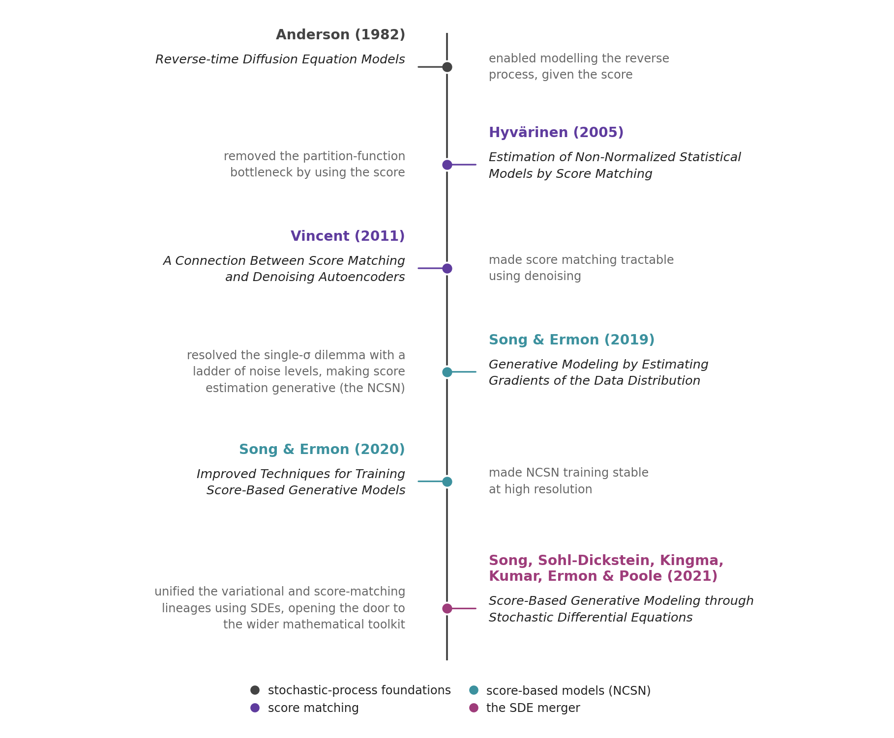
2.1 Energy-based models and the partition function
Energy-based models rely on a constraint-free representation of probability densities, so it is worth examining what any such representation must satisfy.
The requirement on a given model to be a probability distribution is twofold:
- Non-negative, p(x) \ge 0: This is easy to satisfy, since given any function f_\theta(x), each of g_\theta(x) = f_\theta(x)^2 and \exp(f_\theta(x)) is non-negative.
- Sum-to-one, \sum_x p(x) = 1 (or \int p(x)\, dx = 1 for continuous variables): This is the binding constraint, and it matters because a fixed total volume is what makes training meaningful. Increasing p(x_{\text{train}}) then guarantees that x_{\text{train}} becomes relatively more likely than the rest. A generic non-negative g_\theta has \int g_\theta(x)\, dx = Z(\theta) \ne 1, so it is not a valid probability mass function or density.
The generic repair is to divide by the volume,
p_\theta(x) = \frac{1}{Z(\theta)}\, g_\theta(x)
where the normalizer is the total volume under g_\theta,
Z(\theta) = \int g_\theta(x)\, dx
The integral is assumed finite and positive, so g_\theta must decay fast enough at infinity for it to converge. Then \int p_\theta(x)\, dx = 1 by construction.
Choosing the exponential as the non-negativity transform, and writing the exponent as -E_\theta(x), where E_\theta(x) is the energy function, so that low energy values are assigned high probability, gives the energy-based model (EBM) [11]:
p_\theta(x) = \frac{1}{Z(\theta)} \exp(-E_\theta(x))
They are inspired by principles of thermodynamics, where systems evolve toward lower-energy states, so lower-energy states are more likely than higher ones.
Here, the normalization constant
Z(\theta) = \int \exp(-E_\theta(x))\, dx
is called the partition function.
This partition function was one of the deepest obstacles in generative modeling because it sits at the heart of turning an energy function into a valid probability distribution. As we can see, Z requires summing or integrating over the entire, astronomically high-dimensional data space — which amounts to accounting for every possible image, configuration, or state in order to assign probabilities to the ones we care about. This made likelihood-based learning extraordinarily difficult: researchers tried to avoid the problem through contrastive divergence [12], Metropolis-Hastings Markov chain Monte Carlo (MCMC) [13], [14], importance sampling [15], variational approximations [16], pseudo-likelihood [17], autoregressive factorizations [18], and other approximate inference schemes, but these approaches either remained computationally expensive, introduced bias, mixed poorly in high dimensions, or sacrificed the attractive properties of an explicit normalized likelihood. The fundamental difficulty was not simply that Z was “large”; it was that changing the model parameters changes the entire integral, so the normalization had to be repeatedly accounted for during learning.
2.2 The score
2.2.1 Intuition: electric fields
Before defining the score formally, it helps to borrow a picture from electrostatics, where the same two-object relationship — a scalar field and its gradient — appears in a setting most readers already have intuition for.
In electrostatics, a distribution of charge sets up a scalar potential \phi(x) — one number at every point in space. Its value measures how much potential energy a positive test charge would have there: high near like charges it is repelled from, low near opposite charges it is drawn toward. From that potential comes a vector field \mathcal{E}(x) — the electric field — defined as the negative of its gradient, \mathcal{E} = -\nabla \phi. The field has a direction and a magnitude at every point: it points “downhill,” toward lower potential, and it is strong where the potential varies sharply and weak where the potential is flat (Figure 4).
The key relationship is that the field is the negative gradient of the potential. Knowing the potential everywhere, we get the field by differentiating. The field tells us, at any point, which way is downhill in potential most steeply and how steep that descent is. A test charge released into the field feels a force along it and drifts accordingly — it is pushed by the local gradient, without ever needing to know the global shape of the potential.
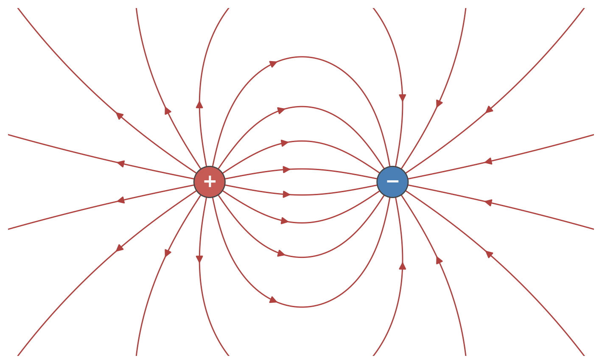
2.2.2 Score definition
Generative modeling follows the electrostatics analogy given above, with the log-density playing the role of the potential. A data distribution defines a log-density \log p(x) at every point — high where data is dense, low where data is sparse. Its gradient,
\boxed{s(x) \;=\; \nabla_x \log p(x)} \tag{13}
is the score. The score plays the role of the field, with one difference in convention: where the electric field is the negative gradient of the potential and points downhill toward lower potential, the score is the positive gradient of the log-density and points uphill — toward regions where data is more likely. Both are the gradient field of a scalar — a vector at every point, aligned with the direction the scalar changes fastest, its magnitude giving the rate of that change; they differ only in sign, and so in whether they point down the potential or up the density.
The analogy pays off in how each field moves the object it acts on. In electrostatics, a test charge released into the field drifts along \mathcal{E}: at each point it feels a force in the field’s direction and is carried downhill in potential, from high potential energy toward low. The field alone determines the motion — the charge follows the local vectors and is transported without any further element. The score does the same for a sample, in the opposite direction: a point released into the score field is carried uphill in log-density, from sparse regions toward dense ones, moving at each step along the local score vector (Figure 5). In both cases the field is sufficient to transport the object across the landscape — the charge from high potential to low, the sample from low density to high — by following its vectors step by step.
That transport is what the reverse process will do: a sample released in a low-density region (pure noise) is carried by the score toward the high-density region where the data lives.
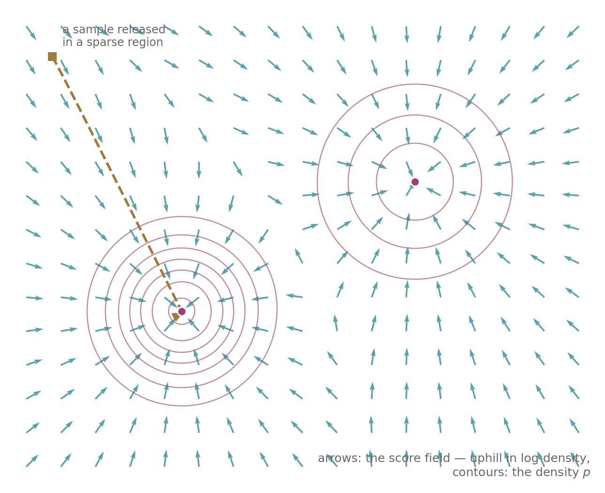
2.2.3 How the score helps
As we saw at the start of this Part, while trying to model the density using an arbitrary function, the presence of the intractable partition function Z(\theta) prohibits density evaluation. But if we look carefully:
p_\theta(x) = \frac{1}{Z(\theta)} \exp(-E_\theta(x))
By the definition of the score,
s_\theta(x) = \nabla_x \log p_\theta(x)
Substituting the EBM for p_\theta(x),
s_\theta(x) = \nabla_x \log \frac{\exp(-E_\theta(x))}{Z(\theta)}
Expanding the logarithm of the quotient,
s_\theta(x) = \nabla_x \big(-E_\theta(x) - \log Z(\theta)\big)
By linearity of the gradient,
s_\theta(x) = -\nabla_x E_\theta(x) - \nabla_x \log Z(\theta)
Since Z(\theta) does not depend on x, its gradient vanishes,
s_\theta(x) = -\nabla_x E_\theta(x)
The gradient of Z(\theta) with respect to x turns out to be zero, which makes the log-density gradient, i.e. the score, independent of Z(\theta) and thus makes it tractable.
Thus, score-based modeling provides a remarkably clean escape: rather than learning or evaluating the normalized density itself, learn its score, \nabla_x \log p(x). Because differentiation annihilates the unknown constant, the partition function disappears entirely. That shift — from modeling probability values to modeling the geometry of the probability landscape — is what turned a problem that had resisted generations of generative-modeling research into something that could be learned locally from data.
The structure of that escape is worth pausing on. Normalization was the source of the difficulty, since \int p_\theta(x)\, dx = 1 is what forces the intractable Z(\theta). Differentiating the log-density removes Z(\theta), but differentiation discards information, so recovering the density from the score means integrating it back and picking up an unknown constant. That constant is fixed by the same constraint that caused the difficulty. On a connected domain where the density is positive, requiring it to integrate to one determines it uniquely, so the score carries as much information as the density, and score-based modeling is an equivalent formulation of density estimation rather than a lossy substitute for it. The argument does not extend further, because normalization supplies exactly one constraint, and a second derivative of the log-density would discard more than one constant can restore.
2.3 Modeling using score matching
This section builds the simplest score-based generative model. The KL divergence compares two distributions through their densities, so comparing them through their scores calls for a different quantity, the Fisher divergence. Explicit score matching minimizes it directly, comparing the model’s score with the true score of the data distribution. That objective is not computable, because the true score is unknown. Implicit score matching removes the unknown target, leaving a quantity computable from samples alone. The section then discusses sampling with Langevin MCMC driven by the learned score. Four pitfalls close it, and together they show that replacing the density with the score was not free.
2.3.1 Training: score matching
Since scores are computable without Z(\theta), a training objective that compares scores rather than densities avoids the partition function entirely. The Fisher divergence is one such objective, and it measures the difference between two distributions p(x) and q(x) as:
D_F(p, q) := \tfrac{1}{2} \mathbb{E}_p\big[\lVert\nabla_x \log p(x) - \nabla_x \log q(x)\rVert^2\big]
Throughout, the subscript of \mathbb{E} names the density the expectation averages over.
2.3.1.1 Explicit score matching
Hyvärinen’s score matching [19] fits a model by minimizing the Fisher divergence between the data distribution p_0 and the model p_\theta. The model enters only through its score, so from here s_\theta may be a network that outputs the score vector directly — a score-based model — rather than the gradient of an energy. The objective is:
\boxed{\mathcal{L}_{\mathrm{ESM}_{p_0}}(\theta) := \tfrac{1}{2} \mathbb{E}_{p_0}\big[\lVert s_\theta(x) - \nabla_x \log p_0(x)\rVert^2\big]} \tag{14}
In Vincent’s terminology [5] this is the explicit score matching (ESM) objective — explicit because the target score is written out in the open.
For an EBM the score is s_\theta = -\nabla_x E_\theta. Substituting it,
\mathcal{L}_{\mathrm{ESM}_{p_0}}(\theta) = \tfrac{1}{2} \mathbb{E}_{p_0}\big[\lVert -\nabla_x E_\theta(x) - \nabla_x \log p_0(x)\rVert^2\big]
Passing from densities to scores removed one unknown but introduced another. The objective no longer requires p_0(x), but it now requires \nabla_x \log p_0(x), which we do not have access to as we have only samples. So \mathcal{L}_{\mathrm{ESM}_{p_0}} is no more computable than a density-based objective such as the KL divergence.
2.3.1.2 Implicit score matching
Hyvärinen’s theorem removes that unknown. An integration-by-parts identity [19] eliminates \nabla_x \log p_0 from Equation 14, leaving the implicit score matching (ISM) form [5], computable from samples alone:
\boxed{\mathcal{L}_{\mathrm{ISM}_{p_0}}(\theta)\;=\;\mathbb{E}_{p_0}\!\left[\tfrac{1}{2}\big\lVert s_\theta(x)\big\rVert^{2}+\operatorname{tr}\big(\nabla_x s_\theta(x)\big)\right],\qquad \mathcal{L}_{\mathrm{ESM}_{p_0}}=\mathcal{L}_{\mathrm{ISM}_{p_0}}+C_1} \tag{15}
Here C_1 = \tfrac{1}{2}\mathbb{E}_{p_0}\big[\lVert \nabla_x \log p_0(x)\rVert^2\big], which does not depend on \theta, so the two objectives share a minimizer.
The equivalence holds under three regularity conditions:
- Differentiability: p_0 and s_\theta are differentiable.
- Finite second moments: \mathbb{E}_{p_0}\big[\lVert \nabla_x \log p_0(x)\rVert^2\big] and \mathbb{E}_{p_0}\big[\lVert s_\theta(x)\rVert^2\big] are finite for every \theta, so that C_1 is finite and, by the Cauchy–Schwarz inequality, so is the cross term \mathbb{E}_{p_0}\big[s_\theta(x) \cdot \nabla_x \log p_0(x)\big] that the proof integrates by parts.
- Decay at infinity: p_0(x)\, s_\theta(x) \to 0 as \lVert x \rVert \to \infty, which is what makes the boundary term of the integration by parts vanish in the proof below.
Proof:
Write s_\theta for s_\theta(x) throughout. By definition,
\mathcal{L}_{\mathrm{ESM}_{p_0}} = \mathbb{E}_{p_0}\!\left[\tfrac{1}{2}\lVert s_\theta - \nabla_x\log p_0\rVert^{2}\right]
Expanding \lVert a-b\rVert^2 inside the expectation,
\mathcal{L}_{\mathrm{ESM}_{p_0}} = \mathbb{E}_{p_0}\!\left[\tfrac{1}{2}\lVert s_\theta\rVert^{2} - s_\theta \cdot \nabla_x\log p_0 + \tfrac{1}{2}\lVert \nabla_x\log p_0\rVert^{2}\right]
By linearity of expectation,
\mathcal{L}_{\mathrm{ESM}_{p_0}} = \mathbb{E}_{p_0}\!\left[\tfrac{1}{2}\lVert s_\theta\rVert^{2}\right] - \mathbb{E}_{p_0}\!\left[s_\theta \cdot \nabla_x\log p_0\right] + \mathbb{E}_{p_0}\!\left[\tfrac{1}{2}\lVert \nabla_x\log p_0\rVert^{2}\right]
The last term is free of \theta; naming it C_1,
\mathcal{L}_{\mathrm{ESM}_{p_0}} = \mathbb{E}_{p_0}\!\left[\tfrac{1}{2}\lVert s_\theta\rVert^{2}\right] - \mathbb{E}_{p_0}\!\left[s_\theta \cdot \nabla_x\log p_0\right] + C_1
Writing the cross term’s expectation as an integral,
\mathcal{L}_{\mathrm{ESM}_{p_0}} = \mathbb{E}_{p_0}\!\left[\tfrac{1}{2}\lVert s_\theta\rVert^{2}\right] - \int p_0(x)\; s_\theta(x)\cdot \nabla_x \log p_0(x)\,dx + C_1
Using \nabla_x\log p_0 = \nabla_x p_0/p_0,
\mathcal{L}_{\mathrm{ESM}_{p_0}} = \mathbb{E}_{p_0}\!\left[\tfrac{1}{2}\lVert s_\theta\rVert^{2}\right] - \int p_0(x)\; s_\theta(x)\cdot \frac{\nabla_x p_0(x)}{p_0(x)}\,dx + C_1
Cancelling p_0,
\mathcal{L}_{\mathrm{ESM}_{p_0}} = \mathbb{E}_{p_0}\!\left[\tfrac{1}{2}\lVert s_\theta\rVert^{2}\right] - \int s_\theta(x)\cdot \nabla_x p_0(x)\,dx + C_1
Writing the dot product as a sum over the d coordinates of x \in \mathbb{R}^d, with s_{\theta,k} the k-th component of s_\theta,
\mathcal{L}_{\mathrm{ESM}_{p_0}} = \mathbb{E}_{p_0}\!\left[\tfrac{1}{2}\lVert s_\theta\rVert^{2}\right] - \sum_{k=1}^{d}\int s_{\theta,k}(x)\,\frac{\partial p_0(x)}{\partial x_k}\,dx + C_1
Integrating by parts in x_k, with x_{\setminus k} the remaining coordinates,
\mathcal{L}_{\mathrm{ESM}_{p_0}} = \mathbb{E}_{p_0}\!\left[\tfrac{1}{2}\lVert s_\theta\rVert^{2}\right] - \sum_{k=1}^{d}\left(\int \Big[s_{\theta,k}\,p_0\Big]_{x_k=-\infty}^{+\infty} dx_{\setminus k} - \int p_0(x)\,\frac{\partial s_{\theta,k}(x)}{\partial x_k}\,dx\right) + C_1
The boundary term vanishes, since s_{\theta,k}\, p_0 \to 0 as x_k \to \pm\infty,
\mathcal{L}_{\mathrm{ESM}_{p_0}} = \mathbb{E}_{p_0}\!\left[\tfrac{1}{2}\lVert s_\theta\rVert^{2}\right] + \sum_{k=1}^{d}\int p_0(x)\,\frac{\partial s_{\theta,k}(x)}{\partial x_k}\,dx + C_1
The sum of the diagonal entries is the trace,
\mathcal{L}_{\mathrm{ESM}_{p_0}} = \mathbb{E}_{p_0}\!\left[\tfrac{1}{2}\lVert s_\theta\rVert^{2}\right] + \int p_0(x)\,\operatorname{tr}\big(\nabla_x s_\theta(x)\big)\,dx + C_1
Writing the integral back as an expectation,
\mathcal{L}_{\mathrm{ESM}_{p_0}} = \mathbb{E}_{p_0}\!\left[\tfrac{1}{2}\lVert s_\theta\rVert^{2}\right] + \mathbb{E}_{p_0}\!\left[\operatorname{tr}\big(\nabla_x s_\theta(x)\big)\right] + C_1
Combining the two expectations by linearity,
\mathcal{L}_{\mathrm{ESM}_{p_0}} = \mathbb{E}_{p_0}\!\left[\tfrac{1}{2}\big\lVert s_\theta(x)\big\rVert^{2}+\operatorname{tr}\big(\nabla_x s_\theta(x)\big)\right] + C_1
Naming the \theta-dependent part \mathcal{L}_{\mathrm{ISM}_{p_0}}(\theta),
\boxed{\mathcal{L}_{\mathrm{ISM}_{p_0}}(\theta)\;=\;\mathbb{E}_{p_0}\!\left[\tfrac{1}{2}\big\lVert s_\theta(x)\big\rVert^{2}+\operatorname{tr}\big(\nabla_x s_\theta(x)\big)\right],\qquad \mathcal{L}_{\mathrm{ESM}_{p_0}}=\mathcal{L}_{\mathrm{ISM}_{p_0}}+C_1}
which is Equation 15. \square
2.3.1.3 Training procedure
For the EBM, s_\theta = \nabla_x \log p_\theta and \nabla_x s_\theta = \nabla_x^2 \log p_\theta, so substituting these in Equation 15,
\tfrac{1}{2} \mathbb{E}_{p_0}\big[\lVert\nabla_x \log p_\theta(x) - \nabla_x \log p_0(x)\rVert^2\big] = \mathbb{E}_{p_0}\Big[\tfrac{1}{2}\lVert\nabla_x \log p_\theta(x)\rVert^2 + \operatorname{tr}\big(\underbrace{\nabla_x^2 \log p_\theta(x)}_{\text{Hessian of } \log p_\theta(x)}\big)\Big] + \text{const}
Training is then standard: sample a mini-batch \{x^{(1)}, x^{(2)}, \cdots, x^{(m)}\} \sim p_0(x) and estimate the loss by the empirical mean \hat{\mathcal{L}}_{\mathrm{ISM}_{p_0}}(\theta)
\hat{\mathcal{L}}_{\mathrm{ISM}_{p_0}}(\theta) = \frac{1}{m} \sum_{j=1}^m \Big[\tfrac{1}{2}\lVert\nabla_x \log p_\theta(x^{(j)})\rVert^2 + \operatorname{tr}\big(\nabla_x^2 \log p_\theta(x^{(j)})\big)\Big]
Substituting \nabla_x \log p_\theta = -\nabla_x E_\theta, which leaves the squared norm unchanged and flips the sign of the trace,
\hat{\mathcal{L}}_{\mathrm{ISM}_{p_0}}(\theta) = \frac{1}{m} \sum_{j=1}^m \Big[\tfrac{1}{2}\lVert\nabla_x E_\theta(x^{(j)})\rVert^2 - \operatorname{tr}\big(\nabla_x^2 E_\theta(x^{(j)})\big)\Big]
and this is the loss used to run stochastic gradient descent for training.
2.3.2 Sampling: Langevin MCMC
The Langevin MCMC method obtains random samples from a probability distribution for which direct sampling is difficult. It uses overdamped Langevin dynamics [20] to generate the states of a random walk that has the target distribution as its stationary distribution. Each new state is generated from the previous one using evaluations of the score of the target density. Informally, the Langevin dynamics drives the random walk toward regions of high probability in the manner of a gradient flow.
We want samples from p_0, so the overdamped Langevin Itô diffusion for it is,
dX_t = \nabla_x \log p_0(X_t)\, dt + \sqrt{2}\, dW_t
where \nabla_x \log p_0(X_t) is its drift and W_t is a standard Brownian motion.
How p_0 is stationary: A Fokker-Planck check settles it. For a diffusion dX_t = \mu(X_t, t)\, dt + \sigma(X_t, t)\, dW_t, the density of X_t satisfies
\frac{\partial p}{\partial t} = -\nabla_x \cdot \big[\mu(x, t)\, p(x, t)\big] + \tfrac{1}{2}\Delta_x \big[\sigma^2(x, t)\, p(x, t)\big]
which is Eq. (34) of post #1 in d dimensions, with \nabla_x \cdot the divergence and \Delta_x the Laplacian. Substituting the drift \mu = \nabla_x \log p_0 and the constant diffusion coefficient \sigma = \sqrt{2},
\frac{\partial p}{\partial t} = -\nabla_x \cdot \big(p\, \nabla_x \log p_0\big) + \Delta_x p
Evaluating the right-hand side at p = p_0,
\frac{\partial p}{\partial t}\bigg|_{p = p_0} = -\nabla_x \cdot \big(p_0\, \nabla_x \log p_0\big) + \Delta_x p_0
Using p_0 \nabla_x \log p_0 = \nabla_x p_0,
\frac{\partial p}{\partial t}\bigg|_{p = p_0} = -\nabla_x \cdot \nabla_x p_0 + \Delta_x p_0
Using \nabla_x \cdot \nabla_x = \Delta_x, the two terms cancel,
\frac{\partial p}{\partial t}\bigg|_{p = p_0} = 0
So p_0 does not change under the dynamics. That the law of X_t converges to it from any starting point is the ergodicity result of Roberts and Tweedie [21].
Approximate sample paths of this Langevin diffusion can be generated by the Euler–Maruyama method, the discrete-time scheme for SDEs, with a fixed time step \varepsilon > 0. That discretization is known as the unadjusted Langevin algorithm (ULA) [21].
Initialize x^{(0)} \sim \pi from any distribution, and repeat for k \leftarrow 1, 2, \ldots, K,
\begin{aligned} z_k &\sim \mathcal{N}(0, I) \\[4pt] x^{(k)} &\leftarrow x^{(k-1)} + \varepsilon\, \nabla_x \log p_0\big(x^{(k-1)}\big) + \sqrt{2\varepsilon}\, z_k \end{aligned}
The iterates form a Markov chain, each state depending only on the one before it, and the chain is built so that its stationary distribution approaches the target as the step shrinks. Running it long and treating late states as samples is MCMC, and ULA is its Langevin instance. As \varepsilon \to 0 and K \to \infty, x^{(K)} \sim p_0 under regularity conditions on p_0. At a fixed \varepsilon the chain equilibrates to a distribution that differs from p_0 by an error of order \varepsilon.
Replacing the score \nabla_x \log p_0 with the score estimated by the trained model s_\theta(x) gives a sampler that needs neither the partition function nor a density evaluation, and completes the generative process (Figure 6).
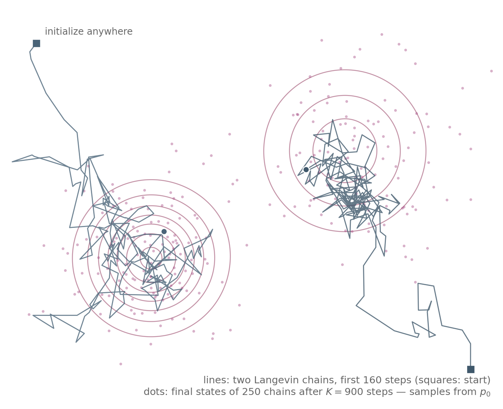
2.3.3 Pitfalls
The basic approach fails in practice for four reasons, and diagnosing them determines the fix. The first three are Song and Ermon’s diagnosis [6]; the fourth is the cost of the trace term.
2.3.3.1 The manifold hypothesis
Real data concentrate on a low-dimensional manifold of the ambient space. When the data live on a manifold, the ambient data score \nabla_x \log p_0(x) is undefined (Figure 7).
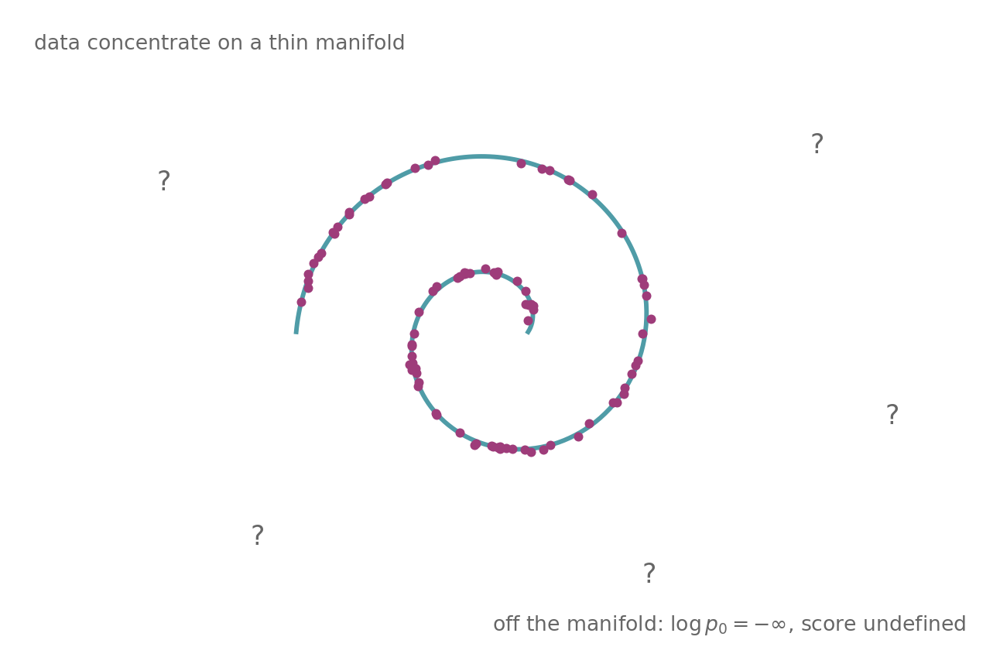
2.3.3.2 Low data density regions
The score-matching objective
\tfrac{1}{2}\mathbb{E}_{p_0}\big[\lVert s_\theta(x) - \nabla_x \log p_0(x)\rVert^2\big]
weights the error at each point by the data density. Langevin MCMC must cross the low-density regions to travel between modes, so an accurate score is needed most where samples are few, and that is where the estimate is worst (Figure 8).
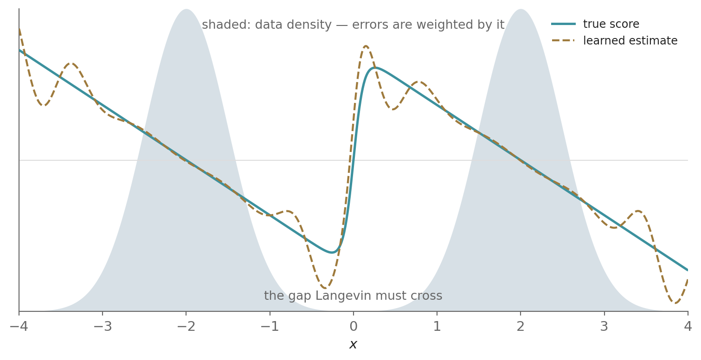
2.3.3.3 Slow mixing between modes
The score is local. It tells a chain which way is uphill from where it stands, and nothing about how much probability lies beyond the next valley. Assume a dataset that is 90% cats and 10% dogs, with the two classes occupying separated regions. A chain started near the cats stays there, because leaving requires a long run of noise steps against the drift, so for a long time the class ratio of the samples reflects where the chains started rather than the data density.
The tilted double well shows this concretely (Figure 9),
U(x) = \frac{x^4}{4} - \frac{x^2}{2} + h\,x, \qquad p_0(x) \propto e^{-U(x)/T}
with two wells separated by a barrier near x = 0 (the root of U'(x) = x^3 - x + h = 0 closest to the origin, at x \approx h), a tilt h > 0 that makes the left well deeper, and a temperature T that sets how sharply p_0 concentrates in them.
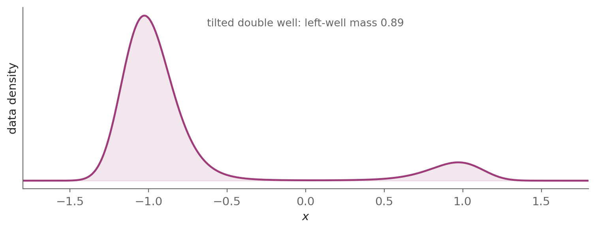
The score -(x^3 - x + h)/T is defined everywhere and depends on h, so the chain lacks no information. What it lacks is time. The expected time to cross the barrier grows as e^{\Delta U/T}, with \Delta U the barrier height, as Kramers showed [22]. For any budget short of that crossing time a chain therefore stays in the well it started in, and the share of samples in each well is set by the initialization rather than by p_0 (Figure 10).
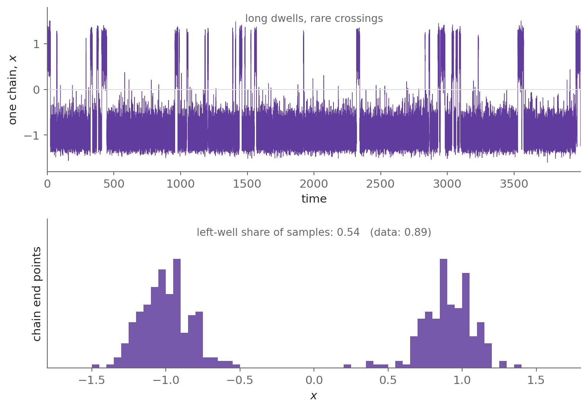
2.3.3.4 Poor computational efficiency
The \mathcal{L}_{\mathrm{ISM}_{p_0}} objective Equation 15 contains the trace of the Jacobian of s_\theta, and with a deep network as the score-based model, that term is the bottleneck. The governing fact about reverse-mode automatic differentiation is that one backward pass computes the gradient of one scalar with respect to all of its inputs, at roughly the cost of a forward pass, no matter how many inputs there are. A vector-valued output needs one pass per component (Table 1).
The trace is a sum of d diagonal entries (with d the dimension of x),
\operatorname{tr}\big(\nabla_x s_\theta(x)\big)=\sum_{k=1}^{d}\frac{\partial s_{\theta,k}(x)}{\partial x_k}
and each s_{\theta,k} is a separate scalar, so each needs its own backward pass. Written out for d = 3,
\nabla_x s_\theta(x) = \begin{pmatrix} \dfrac{\partial s_{\theta,1}(x)}{\partial x_1} & \dfrac{\partial s_{\theta,1}(x)}{\partial x_2} & \dfrac{\partial s_{\theta,1}(x)}{\partial x_3} \\[6pt] \dfrac{\partial s_{\theta,2}(x)}{\partial x_1} & \dfrac{\partial s_{\theta,2}(x)}{\partial x_2} & \dfrac{\partial s_{\theta,2}(x)}{\partial x_3} \\[6pt] \dfrac{\partial s_{\theta,3}(x)}{\partial x_1} & \dfrac{\partial s_{\theta,3}(x)}{\partial x_2} & \dfrac{\partial s_{\theta,3}(x)}{\partial x_3} \end{pmatrix}
— one backprop per diagonal entry. Worse, each pass produces a full row of the Jacobian — d numbers — of which we keep one. We compute order d^{2} quantities to use d of them. Computing \operatorname{tr}(\nabla_x s_\theta(x)) therefore requires O(d) backpropagations.
| Quantity | Differentiating what | Backward passes |
|---|---|---|
| \nabla_\theta L (ordinary training) | scalar loss L | 1 |
| s_\theta = -\nabla_x E_\theta | scalar energy E_\theta | 1 |
| \operatorname{tr}\big(\nabla_x s_\theta\big) | vector field s_\theta, one component at a time | d |
For a modest 32\times32\times3 image, d=3072: roughly three thousand backward passes per training example, against one for ordinary supervised learning — unusable at image dimensionality.
3 Denoising ≡ score matching: the tractable route to score estimation
The shift from density estimation to score estimation removes the partition-function barrier, but it immediately exposes a second fundamental obstacle: although the score \nabla_x \log p(x) is the quantity we want to estimate, the estimation target — the score of the true data distribution — is itself unknown. We only have samples x \sim p_0, not an analytical expression for p_0(x), so we cannot evaluate its gradient and train a network against it. The problem is circular: score estimation avoids the impossible normalization constant and replaces it with another quantity that is just as inaccessible, the gradient of an unknown high-dimensional density.
Researchers therefore explored several ways around this problem. As we saw in Part 2, Hyvärinen’s score matching [19] provided a major theoretical breakthrough by showing that, under suitable conditions, the score-matching objective could be rewritten so that it did not require knowing the data density itself; Song et al.’s sliced score matching [23] later reduced the computational burden of estimating high-dimensional scores; and kernelized score matching [24] and the related nonparametric approach of Li and Turner [25] attempted to make score estimation practical directly from samples. These methods were important, but they did not yet provide a scalable solution for modern high-dimensional generation: the objectives could be computationally expensive, kernel and nonparametric methods suffered from poor scaling with dimensionality and sample size, and estimating the score accurately over the full data space remained difficult.
3.1 Intuition
3.1.1 A cold, dark night
Imagine a foggy street where someone has been placing many poles following a pattern. We want to learn that pattern, so that we can predict where the upcoming poles will stand. To learn the pattern, we remove all random light sources on the street and attach a light source to every pole, turning each into a lamp (Figure 11).
There are two important restrictions. First, our vision is very narrow: we cannot see far away places and can only observe the light as it spreads around us in our closest neighbourhood. Second, the light sources we are using have one special property, their intensity doesn’t directly fall with distance as we move away from the source, but only due to fog. The fog is unusual too. It thins a lamp’s light by the exponential of the squared distance the light has travelled (e^{-r^2/2\ell^2}, for a distance r and a fog thickness \ell), so intensity falls off far more sharply with range than ordinary light would. Light from a lamp across the road reaches us strongly, but light from a lamp three blocks away has diminished to almost nothing.
As there are multiple sources, what we observe at a point is the cumulative sum of all the light every lamp contributes, each thinned by the fog it crossed, with the cumulative light carrying no label saying which source sent which part of it.
3.1.2 Where is the light coming from?
As we saw, we cannot take the light apart to identify individual sources, yet we can ask a simpler question: which way does it get stronger?
The answer to that question needs no decomposition. We take a step in some direction and see whether light intensity increases or decreases; we can find the answer to this question, irrespective of what produced it. Doing this in every direction, one of them wins, and we take a small step in that direction.
And that direction, though we never needed individual lamp locations to find it, is not arbitrary. The light gets stronger as we move toward the lamps, because the lamps are the source. A lamp across the road pulls the direction toward itself, strongly, because much of its light survives the fog to reach us. A lamp three blocks away pulls too, but very meekly, because almost none of its light reached us. Every lamp contributes on which way to go, and each contribution matches the amount of light that lamp contributed in the total light observed by us.
As the direction of increasing light is a weighted average of the vectors connecting the point to each lamp, it points towards their centre of mass, almost surely a place where no actual lamp is present.
If we do not control the light on each individual lamp, finding the direction at a point means accounting for every lamp that contributed to the light there, as many terms as there are lamps, a costly operation.
However, we are in control of which light to turn on and which one to leave off. We switch on one light source at a time and pick a random point inside its glow to find the direction of that source — a direction we know exactly, because we chose which lamp was lit. If we do this for all the lamps, over many points, the average direction at a point settles at the same one the cumulative light would have given. To generate a new pole location matching the pattern, we pick a random point and from there take small steps following the direction we learnt, with a little randomness in each step. After enough steps the point we are standing on is a plausible pole location, blurred by the fog we added.
3.2 Definitions
The denoising score matching derivation uses the objects below.
| Symbol | Meaning |
|---|---|
| p_0(x) | Data distribution — the unknown true probability density function (pdf); x \in \mathbb{R}^d |
| \hat{p}(x) = \frac{1}{n}\sum_{i=1}^n \delta(x - x^{(i)}) | Empirical pdf of the training set \{x^{(1)}, \ldots, x^{(n)}\}, where each x^{(i)} is an i.i.d. sample from p_0 |
| p_\sigma(\tilde{x} \mid x) = \frac{1}{(2\pi)^{d/2}\sigma^d}\, e^{-\frac{1}{2\sigma^2}\lVert \tilde{x} - x \rVert^2} | Perturbation kernel (Vincent’s “smoothing kernel” or “noise model”): isotropic Gaussian of variance \sigma^2 I |
| p_\sigma(x, \tilde{x}) = \hat{p}(x)\, p_\sigma(\tilde{x} \mid x) | Joint pdf |
| p_\sigma(\tilde{x}) = \frac{1}{n}\sum_{i=1}^n p_\sigma(\tilde{x} \mid x^{(i)}) | Parzen density estimate [26] based on the training set; obtainable by marginalizing p_\sigma(x, \tilde{x}) |
| p_\theta(x) | Density model with parameters \theta |
| \lVert u \rVert = \sqrt{\sum_i u_i^2} | Euclidean norm of vector u |
| I | Identity matrix |
3.3 Where is the score pointing to?
With the notation of Table 2 in place, let us see how the light-driven search for the pole pattern helps us. In generative modeling we have a similar setup: we are given a set of training samples with no knowledge of the distribution they were sampled from, so we do not know how to generate new samples matching the given ones.
To solve this we follow a similar approach, where each sample is equivalent to a pole and its value x^{(i)} to the pole’s location. Like a light source attached to a pole and spreading light on the street, we perturb each given sample by adding Gaussian noise of scale \sigma, which turns the samples into sources of probability spreading it in space as a perturbation kernel p_\sigma(\tilde{x} \mid x^{(i)}), with \sigma controlled noise acting as the fog. Like the cumulative light at a given point, the total probability density at a given point (\tilde{x}) is the sum of the kernel densities, giving p_\sigma(\tilde{x}).
In the case of the light, moving a little in various directions and observing the change gave us the direction in which the light increases the most. Doing the same here, but evaluating the probability density instead of the light, gives the direction in which the density increases the most. Like the light, it is a weighted average of the vectors connecting \tilde{x} to each sample, each weighted by that sample’s share of the density arriving at \tilde{x}, and it is represented by the score \nabla_{\tilde{x}} \log p_\sigma(\tilde{x}).
As with the light, obtaining that average direction costs a term per sample at every point. But like turning on one light source at a time, denoising score matching takes one sample at a time, corrupts it to convert it into a source, and then the direction back is known exactly, because we know which particular sample was switched on.
If we do this for all the samples x^{(i)}, over many perturbed points \tilde{x}, and fit a single score-based model to the results, it settles at the same score the cumulative density would have given. To generate a new sample, we pick a random \tilde{x} and from there take small steps following the score, with a little randomness in each step. After enough steps the value we reach is a plausible sample, blurred by the noise we added.
3.4 The Parzen window density
As we discussed earlier, score matching wants us to compare our model’s gradient field against the data’s gradient field, but the trouble is that we have never seen the data’s gradient field. We only have samples: a finite set of points, each sitting at its own location, with nothing in between. A finite set of points has no gradient. There is nothing to differentiate, and so nothing to compare against. The way out begins by giving the data something to be a gradient of. So, in the next few steps we try to find a density we can use to replace the unknown true probability distribution p_0.
The first step starts with replacing p_0 with the most basic pdf we can create using the samples:
\hat{p}(x) \;=\; \frac{1}{n}\sum_{i=1}^{n}\delta\big(x - x^{(i)}\big) \tag{16}
which is the empirical distribution, the pdf for a discrete distribution represented by discrete sample points expressed with Dirac deltas (Figure 12). It is zero almost everywhere and infinite on a finite set of points. Thus, it has no density in the ordinary sense and as it is still not differentiable, \nabla_x \log \hat{p} does not exist anywhere that matters.
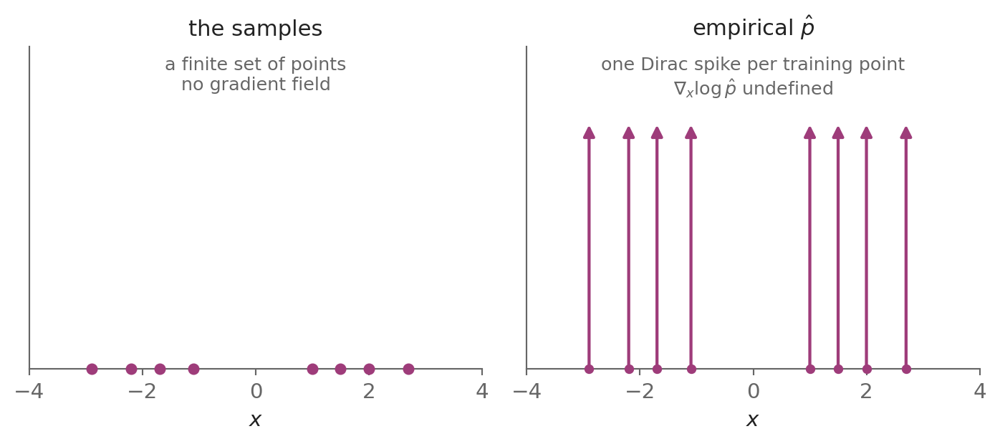
To fix that deficiency, we use kernel density estimation (KDE) [26]. KDE is the application of kernel smoothing for probability density estimation, a non-parametric method to estimate the pdf of a random variable based on kernels as weights. KDE answers a fundamental data smoothing problem where inferences about the population are made based on a finite data sample, something we desire here as we are looking for an appropriate replacement of p_0 using the data samples.
To do it, we take a sample and perturb it using additive Gaussian noise of covariance \sigma^{2}I yielding corrupted input:
\tilde{x} \;=\; x + \sigma\epsilon, \qquad \epsilon \sim \mathcal{N}\big(0,\, I\big)
In terms of \hat{p}, this implies replacing the spike corresponding to that sample with a Gaussian kernel:
p_\sigma(\tilde{x}\mid x)\;=\;\mathcal{N}\big(\tilde{x};\,x,\,\sigma^{2}I\big)\;=\;(2\pi\sigma^{2})^{-d/2}\exp\!\left(-\frac{\lVert \tilde{x}-x\rVert^{2}}{2\sigma^{2}}\right) \tag{17}
which is a conditional distribution conditioned on the sample x, an isotropic Gaussian centred at x with variance \sigma^2, the perturbation kernel. This converts that single point into a cloud, which is densest at the original sample location and gradually thinning outward.
If we do this for every sample and replace each spike with the corresponding kernel, we get:
p_\sigma(\tilde{x})\;=\;\frac{1}{n}\sum_{i=1}^{n} p_\sigma\big(\tilde{x}\mid x^{(i)}\big)\;=\;\frac{1}{n}\sum_{i=1}^{n}(2\pi\sigma^{2})^{-d/2}\exp\!\left(-\frac{\lVert \tilde{x}-x^{(i)}\rVert^{2}}{2\sigma^{2}}\right) \tag{18}
This estimated density obtained by perturbing all the samples of a distribution with a kernel and taking their equi-weight average is called the Parzen window density estimator. It results in the isolated points becoming overlapping clouds and the total density at a given point becoming the sum of n densities, one corresponding to each sample. What was a scatter of locations is now a continuous field of probability, defined everywhere, strictly positive, and differentiable everywhere with a score (Figure 13).
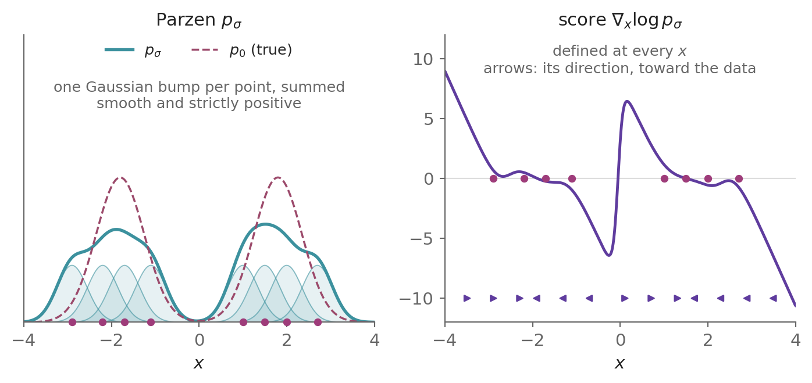
The Parzen window density estimator fixes our issue of no gradients, however p_\sigma is not the density we wanted as it is \hat{p} convolved with a Gaussian. It is a blurred version of p_0 only in expectation over the training set.
3.5 Back to score matching
Having converted p_0(x) with intractable scores into the sample-based but corrupted and approximate Parzen density p_\sigma(\tilde{x}) with tractable scores, let’s see what impact this change has on our score-matching objectives of Section 2.3.1.
Using the same convention, we can write the ESM objective for \hat{p} as:
\mathcal{L}_{\mathrm{ESM}_{\hat{p}}}(\theta) := \tfrac{1}{2} \mathbb{E}_{\hat{p}}\big[\lVert s_\theta(x) - \nabla_x \log \hat{p}(x)\rVert^2\big] \tag{19}
But its target \nabla_x \log \hat{p} does not exist, as the previous section established, so \mathcal{L}_{\mathrm{ESM}_{\hat{p}}} cannot be computed.
Similarly, the ISM objective for \hat{p} is:
\mathcal{L}_{\mathrm{ISM}_{\hat{p}}}(\theta)\;=\;\mathbb{E}_{\hat{p}}\!\left[\tfrac{1}{2}\big\lVert s_\theta(x)\big\rVert^{2}+\operatorname{tr}\big(\nabla_x s_\theta(x)\big)\right]
Writing the expectation under \hat{p} as the average over the training set,
\mathcal{L}_{\mathrm{ISM}_{\hat{p}}}(\theta)\;=\;\frac{1}{n}\sum_{i=1}^{n}\left[\tfrac{1}{2}\big\lVert s_\theta(x^{(i)})\big\rVert^{2}+\operatorname{tr}\big(\nabla_x s_\theta(x^{(i)})\big)\right] \tag{20}
\mathcal{L}_{\mathrm{ISM}_{\hat{p}}} remains well-defined — it contains only the model’s quantities, and the density enters only as the averaging measure. Its summand has finite mean under p_0, so by the law of large numbers it converges to \mathcal{L}_{\mathrm{ISM}_{p_0}} as n \to \infty for each fixed \theta. It is hence asymptotically equivalent to the objective \mathcal{L}_{\mathrm{ESM}_{p_0}}.
\mathcal{L}_{\mathrm{ESM}_{\hat{p}}} cannot be computed while \mathcal{L}_{\mathrm{ISM}_{\hat{p}}} can. Thus, in the case of \hat{p} the ESM and ISM objectives are not equivalent. The reason is that \hat{p} fails the regularity conditions: Hyvärinen’s theorem can’t repair its non-differentiability, as the objective its integration by parts would transform does not exist.
Following the same convention, the ESM objective for p_\sigma(\tilde{x}) is:
\mathcal{L}_{\mathrm{ESM}_{p_\sigma}}(\theta) := \tfrac{1}{2} \mathbb{E}_{p_\sigma(\tilde{x})}\big[\lVert s_\theta(\tilde{x}) - \nabla_{\tilde{x}} \log p_\sigma(\tilde{x})\rVert^2\big] \tag{21}
Similarly, the ISM objective for p_\sigma(\tilde{x}) is:
\mathcal{L}_{\mathrm{ISM}_{p_\sigma}}(\theta)\;=\;\mathbb{E}_{p_\sigma(\tilde{x})}\!\left[\tfrac{1}{2}\big\lVert s_\theta(\tilde{x})\big\rVert^{2}+\operatorname{tr}\big(\nabla_{\tilde{x}} s_\theta(\tilde{x})\big)\right] \tag{22}
For \sigma > 0, p_\sigma(\tilde{x}) is differentiable, decreases to 0 at infinity, and \mathbb{E}_{p_\sigma(\tilde{x})}\big[\lVert \nabla_{\tilde{x}} \log p_\sigma(\tilde{x}) \rVert^2\big] is finite. The model-side conditions — s_\theta differentiable, \mathbb{E}_{p_\sigma(\tilde{x})}\big[\lVert s_\theta(\tilde{x}) \rVert^2\big] finite, and the product p_\sigma(\tilde{x})\, s_\theta(\tilde{x}) vanishing at infinity — hold as before, since p_\sigma’s Gaussian tails dominate any polynomially bounded network. Thus, all regularity conditions are satisfied, so like Equation 15, \mathcal{L}_{\mathrm{ISM}_{p_\sigma}} is also equivalent to \mathcal{L}_{\mathrm{ESM}_{p_\sigma}}.
As \sigma \to 0 the perturbation vanishes: \tilde{x} = x, every cloud collapses back to its spike, and p_\sigma falls back to \hat{p} — where, as we saw, \mathcal{L}_{\mathrm{ESM}_{\hat{p}}} cannot be computed and the ESM and ISM objectives are not equivalent, so \mathcal{L}_{\mathrm{ISM}_{\hat{p}}}, though computable, loses the guarantee that minimizing it matches the score it is meant to target, \nabla_x \log \hat{p}. For every \sigma > 0 the two objectives still differ by a finite \theta-free constant and share a minimizer. That constant is \tfrac{1}{2}\mathbb{E}_{p_\sigma(\tilde{x})}\big[\lVert \nabla_{\tilde{x}} \log p_\sigma(\tilde{x}) \rVert^{2}\big], and the score of a width-\sigma cloud is of order 1/\sigma near a training point, so the constant \to \infty as \sigma \to 0. Keeping \sigma > 0 preserves both the target and the equivalence.
3.6 Score-matching objectives — recap
So far, we have derived six different score-matching objectives for three different densities. Before we go to the next step, it is a good time to look back and recap the properties each objective has and the trade-offs each makes. Table 3 below does that:
| Objective | Density available | Gradient available | Computable exactly | Estimable by sampling | ESM ≡ ISM | Bias | Variance | Computationally efficient |
|---|---|---|---|---|---|---|---|---|
| \mathcal{L}_{\mathrm{ESM}_{p_0}} | no | no | no | no | yes | — | — | — |
| \mathcal{L}_{\mathrm{ISM}_{p_0}} | no | no | no | yes | yes | — | — | no (O(d) trace) |
| \mathcal{L}_{\mathrm{ESM}_{\hat{p}}} | yes | no | undefined | — | no | — | — | — |
| \mathcal{L}_{\mathrm{ISM}_{\hat{p}}} | yes | no | yes | — | no | unbiased | higher | no (O(d) trace) |
| \mathcal{L}_{\mathrm{ESM}_{p_\sigma}} | yes | yes | no | yes | yes | biased (smoothing) |
lower | no (n-kernel target) |
| \mathcal{L}_{\mathrm{ISM}_{p_\sigma}} | yes | yes | no | yes | yes | biased (smoothing) |
lower | no (O(d) trace) |
The generative goal is a single gradient: \nabla_\theta \mathcal{L}_{\mathrm{ESM}_{p_0}}, the direction that matches the model to the score of the data distribution. Below, we pick each of the other five objectives and, using Table 3, discuss how its gradient relates to that goal:
- \mathcal{L}_{\mathrm{ISM}_{p_0}}: Equivalent to the goal but not computable exactly, estimable by sampling at inefficient O(d) trace cost.
- \mathcal{L}_{\mathrm{ESM}_{\hat{p}}}: The objective is undefined as the density’s gradient does not exist, nothing to match to the goal.
- \mathcal{L}_{\mathrm{ISM}_{\hat{p}}}: Computable exactly, gradient is an unbiased estimator of the goal [5] but the issues are higher variance, the failed equivalence, and inefficiency due to the O(d) trace cost.
- \mathcal{L}_{\mathrm{ESM}_{p_\sigma}}: Density and gradient both are available thus well-defined and estimable by sampling but gradient is a biased (smoothing) estimator of the goal, likely with lower variance [5]; computationally inefficient due to the n-kernel target.
- \mathcal{L}_{\mathrm{ISM}_{p_\sigma}}: The equivalence holds, so the gradient equals \nabla_\theta \mathcal{L}_{\mathrm{ESM}_{p_\sigma}} and, like \mathcal{L}_{\mathrm{ESM}_{p_\sigma}}, density and gradient both are available thus well-defined and estimable by sampling but gradient is a biased (smoothing) estimator of the goal, likely with lower variance; computationally inefficient due to the O(d) trace cost.
If we focus on the last objective, \mathcal{L}_{\mathrm{ISM}_{p_\sigma}}, it is an expectation under p_\sigma that must be estimated by sampling perturbed points, with the same inefficient O(d) trace term as \mathcal{L}_{\mathrm{ISM}_{p_0}} but in addition to that it is a biased estimator of the goal while \mathcal{L}_{\mathrm{ISM}_{p_0}} was not. So it looks like we spent time creating an objective which has made the problem worse but hold that judgment for a while as the payoff for this hard work comes in the next section.
3.7 Marginal to joint
The final element of the setup is a new object: the joint distribution over clean-and-corrupted pairs,
p_\sigma(x,\tilde{x}) = \hat{p}(x)\,p_\sigma(\tilde{x}\mid x)
The issue: the marginal score \nabla_{\tilde{x}} \log p_\sigma(\tilde{x}) is an n-kernel mixture, inefficient as we saw in the previous section. The observation: because we corrupt the samples ourselves, the pair (x, \tilde{x}) is available, not merely \tilde{x}, so the conditional score \nabla_{\tilde{x}} \log p_\sigma(\tilde{x} \mid x), the score of a single Gaussian in closed form, is available too. The solution: average over the joint and match the conditional score, which the next section develops.
3.8 The denoising score matching objective
Let us now consider the denoising score matching (DSM) objective [5], which was inspired by both the score-matching principle and the denoising-autoencoder approach of using pairs of clean and corrupted examples (x, \tilde{x}). For the joint density p_\sigma(x,\tilde{x}) = \hat{p}(x)\,p_\sigma(\tilde{x}\mid x), it is defined as:
\boxed{\mathcal{L}_{\mathrm{DSM}_{p_\sigma}}(\theta)=\mathbb{E}_{p_\sigma(x,\tilde{x})}\!\left[\tfrac{1}{2}\big\lVert s_\theta(\tilde{x})-\nabla_{\tilde{x}}\log p_\sigma(\tilde{x}\mid x)\big\rVert^{2}\right]} \tag{23}
If we compare this objective with the \mathcal{L}_{\mathrm{ESM}_{p_\sigma}} objective (Equation 21), two elements changed: the averaging distribution changed from the marginal p_\sigma(\tilde{x}) to the joint p_\sigma(x,\tilde{x}), and the density whose score s_\theta(\tilde{x}) targets changed from the marginal p_\sigma(\tilde{x}) to the conditional p_\sigma(\tilde{x}\mid x). At first glance, the two objectives appear very different but as we show below they differ by a constant.
Theorem:
Under the standing regularity assumptions, for any perturbation kernel p_\sigma(\tilde{x}\mid x) that is differentiable in \tilde{x} [5],
\boxed{\mathcal{L}_{\mathrm{ESM}_{p_\sigma}}(\theta)\;=\;\mathcal{L}_{\mathrm{DSM}_{p_\sigma}}(\theta)\;+\;C,\qquad \frac{\partial C}{\partial \theta}=0} \tag{24}
and consequently
\operatorname*{arg\,min}_{\theta} \mathcal{L}_{\mathrm{ESM}_{p_\sigma}}(\theta)\;=\;\operatorname*{arg\,min}_{\theta} \mathcal{L}_{\mathrm{DSM}_{p_\sigma}}(\theta)
Proof:
By the definition Equation 21,
\mathcal{L}_{\mathrm{ESM}_{p_\sigma}} = \mathbb{E}_{p_\sigma(\tilde{x})}\!\left[\tfrac{1}{2}\big\lVert s_\theta(\tilde{x})-\nabla_{\tilde{x}}\log p_\sigma(\tilde{x})\big\rVert^{2}\right]
Expanding the square inside the expectation,
\mathcal{L}_{\mathrm{ESM}_{p_\sigma}} = \mathbb{E}_{p_\sigma(\tilde{x})}\!\left[\tfrac{1}{2}\lVert s_\theta(\tilde{x})\rVert^{2} - s_\theta(\tilde{x})\cdot\nabla_{\tilde{x}}\log p_\sigma(\tilde{x}) + \tfrac{1}{2}\lVert \nabla_{\tilde{x}}\log p_\sigma(\tilde{x})\rVert^{2}\right]
By linearity of expectation,
\mathcal{L}_{\mathrm{ESM}_{p_\sigma}} = \mathbb{E}_{p_\sigma(\tilde{x})}\!\left[\tfrac{1}{2}\lVert s_\theta(\tilde{x})\rVert^{2}\right] - \mathbb{E}_{p_\sigma(\tilde{x})}\!\left[s_\theta(\tilde{x})\cdot\nabla_{\tilde{x}}\log p_\sigma(\tilde{x})\right] + \mathbb{E}_{p_\sigma(\tilde{x})}\!\left[\tfrac{1}{2}\lVert \nabla_{\tilde{x}}\log p_\sigma(\tilde{x})\rVert^{2}\right]
The last term is free of \theta; naming it C_{\mathrm{E}},
\mathcal{L}_{\mathrm{ESM}_{p_\sigma}} = \mathbb{E}_{p_\sigma(\tilde{x})}\!\left[\tfrac{1}{2}\lVert s_\theta(\tilde{x})\rVert^{2}\right] - \mathbb{E}_{p_\sigma(\tilde{x})}\!\left[s_\theta(\tilde{x})\cdot\nabla_{\tilde{x}}\log p_\sigma(\tilde{x})\right] + C_{\mathrm{E}}
Writing the cross term’s expectation as an integral,
\mathcal{L}_{\mathrm{ESM}_{p_\sigma}} = \mathbb{E}_{p_\sigma(\tilde{x})}\!\left[\tfrac{1}{2}\lVert s_\theta(\tilde{x})\rVert^{2}\right] - \int p_\sigma(\tilde{x})\; s_\theta(\tilde{x})\cdot\nabla_{\tilde{x}}\log p_\sigma(\tilde{x})\;d\tilde{x} + C_{\mathrm{E}}
Using \nabla\log p_\sigma=\nabla p_\sigma/p_\sigma,
\mathcal{L}_{\mathrm{ESM}_{p_\sigma}} = \mathbb{E}_{p_\sigma(\tilde{x})}\!\left[\tfrac{1}{2}\lVert s_\theta(\tilde{x})\rVert^{2}\right] - \int p_\sigma(\tilde{x})\; s_\theta(\tilde{x})\cdot\frac{\nabla_{\tilde{x}}p_\sigma(\tilde{x})}{p_\sigma(\tilde{x})}\;d\tilde{x} + C_{\mathrm{E}}
Cancelling p_\sigma(\tilde{x}),
\mathcal{L}_{\mathrm{ESM}_{p_\sigma}} = \mathbb{E}_{p_\sigma(\tilde{x})}\!\left[\tfrac{1}{2}\lVert s_\theta(\tilde{x})\rVert^{2}\right] - \int s_\theta(\tilde{x})\cdot\nabla_{\tilde{x}}p_\sigma(\tilde{x})\;d\tilde{x} + C_{\mathrm{E}}
Since p_\sigma(\tilde{x}) = \int p_\sigma(x,\tilde{x})\,dx is a marginal,
\mathcal{L}_{\mathrm{ESM}_{p_\sigma}} = \mathbb{E}_{p_\sigma(\tilde{x})}\!\left[\tfrac{1}{2}\lVert s_\theta(\tilde{x})\rVert^{2}\right] - \int s_\theta(\tilde{x})\cdot\nabla_{\tilde{x}}\!\left(\int p_\sigma(x,\tilde{x})\,dx\right)d\tilde{x} + C_{\mathrm{E}}
Differentiating under the integral,
\mathcal{L}_{\mathrm{ESM}_{p_\sigma}} = \mathbb{E}_{p_\sigma(\tilde{x})}\!\left[\tfrac{1}{2}\lVert s_\theta(\tilde{x})\rVert^{2}\right] - \iint s_\theta(\tilde{x})\cdot\nabla_{\tilde{x}}\,p_\sigma(x,\tilde{x})\;dx\,d\tilde{x} + C_{\mathrm{E}}
Since p_\sigma(x,\tilde{x})=\hat{p}(x)\,p_\sigma(\tilde{x}\mid x) with \hat{p}(x) free of \tilde{x}, and \nabla g = g\,\nabla\log g, the gradient of the joint is \nabla_{\tilde{x}}\,p_\sigma(x,\tilde{x}) = p_\sigma(x,\tilde{x})\,\nabla_{\tilde{x}}\log p_\sigma(\tilde{x}\mid x); substituting,
\mathcal{L}_{\mathrm{ESM}_{p_\sigma}} = \mathbb{E}_{p_\sigma(\tilde{x})}\!\left[\tfrac{1}{2}\lVert s_\theta(\tilde{x})\rVert^{2}\right] - \iint p_\sigma(x,\tilde{x})\; s_\theta(\tilde{x})\cdot\nabla_{\tilde{x}}\log p_\sigma(\tilde{x}\mid x)\;dx\,d\tilde{x} + C_{\mathrm{E}}
Reading the double integral back as an expectation over the joint,
\mathcal{L}_{\mathrm{ESM}_{p_\sigma}} = \mathbb{E}_{p_\sigma(\tilde{x})}\!\left[\tfrac{1}{2}\lVert s_\theta(\tilde{x})\rVert^{2}\right] - \mathbb{E}_{p_\sigma(x,\tilde{x})}\!\left[s_\theta(\tilde{x})\cdot\nabla_{\tilde{x}}\log p_\sigma(\tilde{x}\mid x)\right] + C_{\mathrm{E}}
The quadratic term is likewise an expectation over the joint, since its integrand has no x and p_\sigma(\tilde{x}) is p_\sigma(x,\tilde{x}) marginalized over x,
\mathcal{L}_{\mathrm{ESM}_{p_\sigma}} = \mathbb{E}_{p_\sigma(x,\tilde{x})}\!\left[\tfrac{1}{2}\lVert s_\theta(\tilde{x})\rVert^{2}\right] - \mathbb{E}_{p_\sigma(x,\tilde{x})}\!\left[s_\theta(\tilde{x})\cdot\nabla_{\tilde{x}}\log p_\sigma(\tilde{x}\mid x)\right] + C_{\mathrm{E}}
Adding and subtracting C_{\mathrm{D}} := \mathbb{E}_{p_\sigma(x,\tilde{x})}\!\left[\tfrac{1}{2}\lVert \nabla_{\tilde{x}}\log p_\sigma(\tilde{x}\mid x)\rVert^{2}\right], which is free of \theta,
\mathcal{L}_{\mathrm{ESM}_{p_\sigma}} = \mathbb{E}_{p_\sigma(x,\tilde{x})}\!\left[\tfrac{1}{2}\lVert s_\theta(\tilde{x})\rVert^{2}\right] - \mathbb{E}_{p_\sigma(x,\tilde{x})}\!\left[s_\theta(\tilde{x})\cdot\nabla_{\tilde{x}}\log p_\sigma(\tilde{x}\mid x)\right] + C_{\mathrm{D}} + \big(C_{\mathrm{E}}-C_{\mathrm{D}}\big)
By linearity of expectation, collecting the three joint expectations under one,
\mathcal{L}_{\mathrm{ESM}_{p_\sigma}} = \mathbb{E}_{p_\sigma(x,\tilde{x})}\!\left[\tfrac{1}{2}\lVert s_\theta(\tilde{x})\rVert^{2} - s_\theta(\tilde{x})\cdot\nabla_{\tilde{x}}\log p_\sigma(\tilde{x}\mid x) + \tfrac{1}{2}\lVert \nabla_{\tilde{x}}\log p_\sigma(\tilde{x}\mid x)\rVert^{2}\right] + \big(C_{\mathrm{E}}-C_{\mathrm{D}}\big)
Completing the square, now with the conditional score,
\mathcal{L}_{\mathrm{ESM}_{p_\sigma}} = \mathbb{E}_{p_\sigma(x,\tilde{x})}\!\left[\tfrac{1}{2}\big\lVert s_\theta(\tilde{x})-\nabla_{\tilde{x}}\log p_\sigma(\tilde{x}\mid x)\big\rVert^{2}\right] + \big(C_{\mathrm{E}}-C_{\mathrm{D}}\big)
By the definition Equation 23, with C := C_{\mathrm{E}}-C_{\mathrm{D}},
\boxed{\mathcal{L}_{\mathrm{ESM}_{p_\sigma}}(\theta)\;=\;\mathcal{L}_{\mathrm{DSM}_{p_\sigma}}(\theta)\;+\;C}
which is Equation 24. \square
The cancellation of p_\sigma(\tilde{x}) against the denominator of \nabla\log p_\sigma is the key identity: it leaves a bare \nabla p_\sigma, and only then can the marginalization be unfolded and the derivative pushed inside. The same cancellation appears throughout this subject — it is what makes the intractable normalizer drop out of Metropolis acceptance ratios [13].
3.9 The Gaussian kernel, worked out
The theorem holds for any differentiable kernel. With the Gaussian kernel the conditional score becomes explicit, and the objective collapses to something completely ordinary. The Gaussian kernel is
p_\sigma(\tilde{x}\mid x) = (2\pi\sigma^{2})^{-d/2}\exp\!\left(-\frac{\lVert \tilde{x}-x\rVert^{2}}{2\sigma^{2}}\right)
Taking logs, with the constant free of \tilde{x},
\log p_\sigma(\tilde{x}\mid x) = -\frac{\lVert \tilde{x}-x\rVert^{2}}{2\sigma^{2}}+\text{const}
Differentiating, with \nabla_{\tilde{x}}\lVert \tilde{x}-x\rVert^{2}=2(\tilde{x}-x),
\nabla_{\tilde{x}}\log p_\sigma(\tilde{x}\mid x) = -\frac{2(\tilde{x}-x)}{2\sigma^{2}}
Cancelling the factor 2,
\nabla_{\tilde{x}}\log p_\sigma(\tilde{x}\mid x) = -\frac{\tilde{x}-x}{\sigma^{2}}
Writing -(\tilde{x}-x) as x-\tilde{x},
\nabla_{\tilde{x}}\log p_\sigma(\tilde{x}\mid x) = \frac{x-\tilde{x}}{\sigma^{2}}
Substituting the sampling form \tilde{x}=x+\sigma\epsilon with \epsilon\sim\mathcal{N}(0,I), so that x-\tilde{x}=-\sigma\epsilon,
\nabla_{\tilde{x}}\log p_\sigma(\tilde{x}\mid x) = \frac{-\sigma\epsilon}{\sigma^{2}}
Cancelling one factor of \sigma,
\nabla_{\tilde{x}}\log p_\sigma(\tilde{x}\mid x) = -\frac{\epsilon}{\sigma}
Writing the joint expectation of Equation 23 as one over a training sample and a noise sample, with \tilde{x} = x + \sigma\epsilon,
\mathcal{L}_{\mathrm{DSM}_{p_\sigma}}(\theta)=\mathbb{E}_{x\sim \hat{p},\;\epsilon\sim\mathcal{N}(0,I)}\left[\tfrac{1}{2}\left\lVert s_\theta(x+\sigma\epsilon)-\nabla_{\tilde{x}}\log p_\sigma(\tilde{x}\mid x)\right\rVert^{2}\right]
Substituting the conditional score just derived,
\boxed{\mathcal{L}_{\mathrm{DSM}_{p_\sigma}}(\theta)=\mathbb{E}_{x\sim \hat{p},\;\epsilon\sim\mathcal{N}(0,I)}\left[\tfrac{1}{2}\left\lVert s_\theta(x+\sigma\epsilon)-\frac{-\epsilon}{\sigma}\right\rVert^{2}\right]} \tag{25}
which is Equation 23 with the Gaussian kernel’s conditional score substituted. \square
Read that as an algorithm: sample a training point, sample noise, add it, and regress the network onto a target we already hold. No partition function, no trace, no derivatives of s_\theta in its input, one backward pass in comparison to the d backward passes of \mathcal{L}_{\mathrm{ISM}_{p_\sigma}}(\theta).
3.9.1 Why “denoising” score matching?
A network that takes \tilde{x} = x + \sigma\epsilon as input and minimizes the objective Equation 25 by adjusting the parameters \theta will do so by shrinking the difference between s_\theta(\tilde{x}) and -\epsilon/\sigma. Since -\epsilon/\sigma points in the direction opposite to the added noise \epsilon, the matched field carries \tilde{x} back toward the clean x, thus denoising ≡ score matching, i.e., this score matching is denoising in nature.
3.10 The optimum: posterior mean and Tweedie
The constructed distribution (p_\sigma(\tilde{x})) is continuous because each spike was replaced by a Gaussian cloud. It is a mixture: every sample contributes one component to it, its cloud (p_\sigma(\tilde{x} \mid x^{(i)})). Each perturbed point (\tilde{x}) came from exactly one original sample (x), and since we corrupted it ourselves, we can trace that origin. The density cannot. At any location it holds only the summed density, every component’s contribution already merged, and the score (\nabla_{\tilde{x}} \log p_\sigma(\tilde{x})) inherits that: it is a property of the sum alone. So given only the density, if we ask which component produced a given point, we are the fog viewer again. The point could have come from any of the components, some far more plausibly than others, and nothing in the sum says which one.
Since the DSM objective Equation 25 is a squared error and s_\theta is unconstrained, its minimizer s^\star can be found separately at each \tilde{x}: the value the network assigns at one point does not affect the loss at any other. Fixing \tilde{x} and writing v for the vector the network outputs there, v = s_\theta(\tilde{x}), the objective restricted to that \tilde{x} is
g(v) = \mathbb{E}_{p_\sigma(x \mid \tilde{x})}\!\left[\tfrac{1}{2}\big\lVert v-\tfrac{x-\tilde{x}}{\sigma^{2}}\big\rVert^{2}\right]
The expectation is over the posterior p_\sigma(x \mid \tilde{x}) := p_\sigma(x,\tilde{x})/p_\sigma(\tilde{x}), which assigns every clean sample a weight measuring how plausibly it produced this \tilde{x}; splitting the joint expectation of Equation 23 as \mathbb{E}_{p_\sigma(x,\tilde{x})} = \mathbb{E}_{p_\sigma(\tilde{x})}\mathbb{E}_{p_\sigma(x \mid \tilde{x})} is what leaves g(v) as the inner objective at each \tilde{x}. Differentiating with respect to v,
\nabla_v\, g = v-\mathbb{E}\!\left[\tfrac{x-\tilde{x}}{\sigma^{2}}\,\Big|\,\tilde{x}\right]
Setting the gradient to zero and solving for v, with \tilde{x} fixed,
v = \mathbb{E}\!\left[\tfrac{x-\tilde{x}}{\sigma^{2}}\,\Big|\,\tilde{x}\right]
By linearity, with \tilde{x} fixed under the conditioning,
v = \frac{\mathbb{E}[x\mid\tilde{x}]-\tilde{x}}{\sigma^{2}}
Writing s^{\star}(\tilde{x}) for that minimizing value,
s^{\star}(\tilde{x}) = \frac{\mathbb{E}[x\mid\tilde{x}]-\tilde{x}}{\sigma^{2}}
Here \mathbb{E}[x\mid\tilde{x}] is the posterior mean: the average over every clean sample, each weighted by how plausibly it produced \tilde{x}.
At fixed \tilde{x} the inner objective of Equation 21 is \tfrac{1}{2}\lVert v-\nabla_{\tilde{x}}\log p_\sigma(\tilde{x})\rVert^{2}, minimized at v = \nabla_{\tilde{x}}\log p_\sigma(\tilde{x}). By Vincent’s theorem Equation 24 the two objectives differ by a \theta-free constant, so that value is the s^\star just computed,
\boxed{\nabla_{\tilde{x}}\log p_\sigma(\tilde{x})\;=\;\frac{\mathbb{E}[x\mid\tilde{x}]-\tilde{x}}{\sigma^{2}}\qquad\Longleftrightarrow\qquad \mathbb{E}[x\mid\tilde{x}]\;=\;\tilde{x}+\sigma^{2}\,\nabla_{\tilde{x}}\log p_\sigma(\tilde{x})} \tag{26}
That is Tweedie’s formula presented by Efron [27]. \square
It says that the best estimate of the clean sample behind \tilde{x}, \mathbb{E}[x\mid\tilde{x}], and the score of the Parzen density \nabla_{\tilde{x}}\log p_\sigma(\tilde{x}) determine each other exactly: the score is the displacement from \tilde{x} to that estimate, divided by \sigma^{2}. If we estimate one, we can compute the other.
Two points are worth clarifying. First, the correction that moves \tilde{x} back toward the clean data is not the score itself but the score multiplied by \sigma^{2}. Second, the best estimate of its clean version is \mathbb{E}[x\mid\tilde{x}], the posterior mean — not the particular x that generated it (Figure 14).
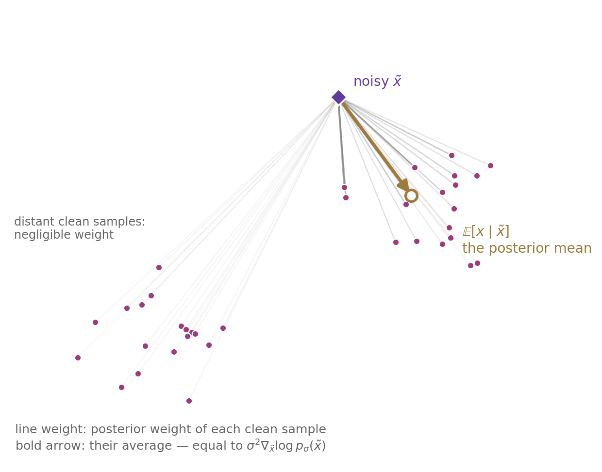
3.11 Pitfalls — resolved
3.11.2 DSM improves computational efficiency from O(d) to O(1)
| ESM | ISM | DSM | |
|---|---|---|---|
| Target | \nabla\log p_\sigma(\tilde{x}) | eliminated | \nabla\log p_\sigma(\tilde{x}\mid x) |
| Computable | yes (n-kernel sum) | yes | yes |
| Backward passes | 1 | d | 1 |
| Target evaluations per point | n kernels | — | 1 |
| Derivatives of s_\theta | none | first (Jacobian trace) | none |
| Estimates the score of | p_\sigma | p_\sigma | p_\sigma |
DSM is an objective that is a plain regression (Table 4). No partition function, no trace, no derivatives of s_\theta in its input, and a target available in closed form. The cost per training example drops from order d backward passes to one, which is the difference between infeasible and routine at image scale.
3.12 New pitfalls
Three new pitfalls take their place:
- The objective is no longer maximum likelihood. Fisher divergence and KL rank models differently, so the fitted model is a different — and, in the well-specified case, still consistent [19] — estimator, but not the maximum-likelihood estimator, and in general it is not asymptotically efficient.
- The estimand is p_\sigma, not p_0. Every version of score matching in this section matches the score of a blurred data density, with a bias proportional to the smoothing that vanishes only as \sigma \to 0. Yet high noise is what provides useful directional information for Langevin dynamics, so fidelity and signal pull in opposite directions — something discussed in more detail in the opening of Section 4.
- The score is a local quantity. If p_0 has two modes separated by a region of near-zero density, matching scores constrains the shape within each mode but says almost nothing about their relative mass — there is no path between them along which the gradient carries information. Mixing proportions are therefore poorly estimated — distinct from the slow-mixing pitfall of Section 2.3.3, which afflicts the sampler even with the exact score in hand; this one afflicts the learned score itself. This is one of the reasons for using several noise levels (Section 4), since a large \sigma blurs the modes together and restores a usable gradient between them.
3.13 Conclusion
Tweedie’s formula says the optimal s_\theta(\tilde{x}) equals \mathbb{E}[-\epsilon/\sigma \mid \tilde{x}] — it points from the noisy \tilde{x} toward the plausibility-weighted average of every clean sample. The score is an optimal denoiser, rescaled. This is the bridge between “score” (the stochastic-calculus object) and “denoising network” (the object deep learning trains): each determines the other. A network trained only to remove noise has, without being told, learned the gradient of the log of the smoothed data density p_\sigma.
The operation that makes the theorem work — an intractable marginal target replaced by a tractable conditional one, with the equivalence holding in expectation — recurs throughout generative modeling. Recognizing that shape is worth more than memorizing this one proof.
Denoising score matching was the breakthrough that turned score estimation from a circular problem — the unknown density is needed to obtain its own score — into supervised learning: corrupt the data with a known noise process, so the conditional score is available in closed form, and learn it from samples. It eliminated the need to know the true density’s score and paved the way for the diffusion-based image and video generation wave that followed.
4 Modeling using multiple noise perturbations
As we saw in the previous Part, in Vincent’s paper, a single number controls the noise, and it is pulled in two directions at once (Figure 15). A small \sigma is the low bias, high variance case. It keeps p_\sigma close to p_0 and the learned score close to the data score, but it fails for two reasons. First, \sigma controls how far the noise travels, and a small \sigma means the regions with no density remain so, providing no training signal to a from-scratch sampler in those regions. Second, the regression target -\epsilon/\sigma blows up, resulting in high estimator variance. A large \sigma is the high bias, low variance case. It fixes both by filling the empty regions with some density, improving the signal, and keeping the target bounded as the estimator variance is low. What it gives up, however, is fidelity due to high bias, which results in p_\sigma being far from p_0 and fine details blurred away in the generated sample. No single value is good to handle all three issues simultaneously.
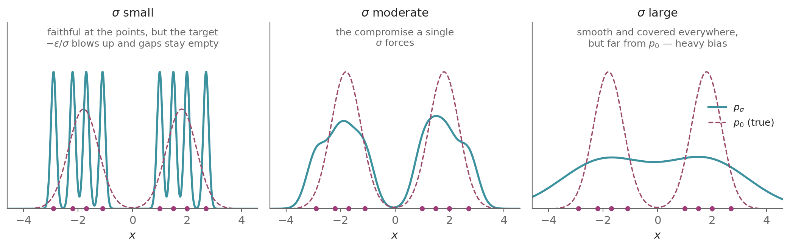
Vincent’s paper takes it as a fixed hyperparameter and lives with the compromise.
Song and Ermon resolved this issue using the noise-conditional score network (NCSN) [6], which uses multiple \sigma values, in particular a geometric ladder \sigma_1 > \sigma_2 > \cdots > \sigma_L. In this Part \sigma_i is the i-th noise level and L the number of levels, following Song and Ermon. Neither carries its Part-1 meaning here. There \sigma_i was the learned reverse step’s standard deviation and L the variational bound. The maximum \sigma_1 is chosen as approximately equal to the maximum pairwise distance between data points, as Song and Ermon recommend [28], and the minimum \sigma_L small enough such that noise in the final samples is negligible. The intermediate levels use a geometric progression with sufficient length as adjacent scales need sufficient overlap for annealed Langevin dynamics to transition between them:
\sigma_1 > \sigma_2 > \sigma_3 > \cdots > \sigma_{L-1} > \sigma_L, \qquad \frac{\sigma_1}{\sigma_2} = \frac{\sigma_2}{\sigma_3} = \cdots = \frac{\sigma_{L-1}}{\sigma_L}
4.1 Training: noise-conditional score networks
To train, instead of using L separate networks per noise level, a single NCSN s_\theta(x, \sigma) is trained to match the score at every level at once by minimizing the weighted sum of per-level denoising errors.
4.1.1 NCSN — DSM loss
Denoising score matching is the natural loss to use as the goal is to estimate scores of perturbed distributions, so the overall training objective is a weighted sum of per-level score-matching losses, written first with the marginal score as the target:
\mathcal{L}(\theta) = \frac{1}{L}\sum_{i=1}^L \lambda(\sigma_i)\, \mathbb{E}_{p_{\sigma_i}(\tilde{x})}\big[\|s_\theta(\tilde{x}, \sigma_i) - \nabla_{\tilde{x}} \log p_{\sigma_i}(\tilde{x})\|^2\big]
In this Part p_{\sigma_i}(\tilde{x}) := \int p_0(x_0)\, p_{\sigma_i}(\tilde{x} \mid x_0)\, dx_0 is the data distribution smoothed at level \sigma_i, the Parzen density Equation 18 with the empirical \hat{p} replaced by p_0. The DSM theorem Equation 24 and its proof hold verbatim under that replacement, because the proof used only that the clean-sample factor of the joint is free of \tilde{x} and that the smoothed density is the integral of the joint over the clean sample. The clean sample is written x_0 throughout, and the factor \tfrac{1}{2} of Equation 23 is absorbed into the weights.
Replacing each marginal score by the conditional score and each marginal average by the joint average over a clean sample x_0 \sim p_0 and its perturbation \tilde{x} = x_0 + \sigma_i \epsilon, which by the DSM theorem changes the objective only by a constant,
\mathcal{L}(\theta) = \frac{1}{L}\sum_{i=1}^L \lambda(\sigma_i)\, \mathbb{E}_{x_0 \sim p_0,\, \epsilon \sim \mathcal{N}(0, I)}\big[\|s_\theta(\tilde{x}, \sigma_i) - \nabla_{\tilde{x}} \log p_{\sigma_i}(\tilde{x} \mid x_0)\|^2\big] + \text{const}
Substituting the Gaussian target \nabla_{\tilde{x}} \log p_{\sigma_i}(\tilde{x} \mid x_0) = -\epsilon/\sigma_i,
\mathcal{L}(\theta) = \frac{1}{L}\sum_{i=1}^L \lambda(\sigma_i)\, \mathbb{E}_{x_0 \sim p_0,\, \epsilon \sim \mathcal{N}(0, I)}\left[\left\|s_\theta(x_0 + \sigma_i \epsilon, \sigma_i) + \frac{\epsilon}{\sigma_i}\right\|^2\right] + \text{const}
There can be many possible choices of the weight \lambda(\sigma_i), however we choose \lambda(\sigma_i) = \sigma_i^2 as per Song and Ermon’s recommendation [6] as this value balances the losses across levels. The level-i target -\epsilon/\sigma_i carries a factor 1/\sigma_i, so the level’s squared error carries 1/\sigma_i^2 times a residual that does not scale with \sigma_i; multiplying by \sigma_i^2 cancels that factor and puts every level on the same footing, so none dominates.
Choosing \lambda(\sigma_i) = \sigma_i^2,
\mathcal{L}(\theta) = \frac{1}{L}\sum_{i=1}^L \sigma_i^2\, \mathbb{E}_{x_0 \sim p_0,\, \epsilon \sim \mathcal{N}(0, I)}\left[\left\|s_\theta(x_0 + \sigma_i \epsilon, \sigma_i) + \frac{\epsilon}{\sigma_i}\right\|^2\right] + \text{const}
Dropping the \theta-free constant, so that \mathcal{L} from here denotes the \theta-dependent part,
\boxed{\mathcal{L}(\theta) = \frac{1}{L}\sum_{i=1}^L \sigma_i^2\, \mathbb{E}_{x_0 \sim p_0,\, \epsilon \sim \mathcal{N}(0, I)}\left[\left\|s_\theta(x_0 + \sigma_i \epsilon, \sigma_i) + \frac{\epsilon}{\sigma_i}\right\|^2\right]} \tag{27}
Pulling \sigma_i inside the norm,
\mathcal{L}(\theta) = \frac{1}{L}\sum_{i=1}^L \mathbb{E}_{x_0 \sim p_0,\, \epsilon \sim \mathcal{N}(0, I)}\big[\|\sigma_i\, s_\theta(x_0 + \sigma_i \epsilon, \sigma_i) + \epsilon\|^2\big]
Defining \epsilon_\theta(\cdot, \sigma_i) := -\sigma_i\, s_\theta(\cdot, \sigma_i),
\boxed{\mathcal{L}(\theta) = \frac{1}{L}\sum_{i=1}^L \mathbb{E}_{x_0 \sim p_0,\, \epsilon \sim \mathcal{N}(0, I)}\big[\|\epsilon - \epsilon_\theta(x_0 + \sigma_i \epsilon, \sigma_i)\|^2\big]} \tag{28}
This is the noise-prediction form. \square
4.1.2 Training procedure
Training samples a mini-batch of data points \{x^{(1)}, \cdots, x^{(m)}\} \sim p_0, noise-scale indices \{i_1, \cdots, i_m\} \sim \mathcal{U}\{1, 2, \cdots, L\}, and Gaussian noise \{\epsilon_1, \cdots, \epsilon_m\} \sim \mathcal{N}(0, I), and minimizes the empirical mean
\frac{1}{m}\sum_{j=1}^m \big\|\epsilon_j - \epsilon_\theta\big(x^{(j)} + \sigma_{i_j}\, \epsilon_j,\ \sigma_{i_j}\big)\big\|^2
by stochastic gradient descent, which is as efficient as training a single DSM model at one noise level.
4.2 Sampling: annealed Langevin dynamics
Annealed Langevin dynamics runs Langevin MCMC against a sequence of noise-smoothed targets p_{\sigma_1} , \dots, p_{\sigma_L} with decreasing noise \sigma_1 > \cdots > \sigma_L, using the score at each level, and carries the samples from one level to the next.
Smoothing fills the low-density gaps so the score is informative everywhere; annealing gradually sharpens back to the data distribution (Figure 16). This is reverse diffusion at discrete noise levels: each level’s score-driven Langevin step is a denoising step.
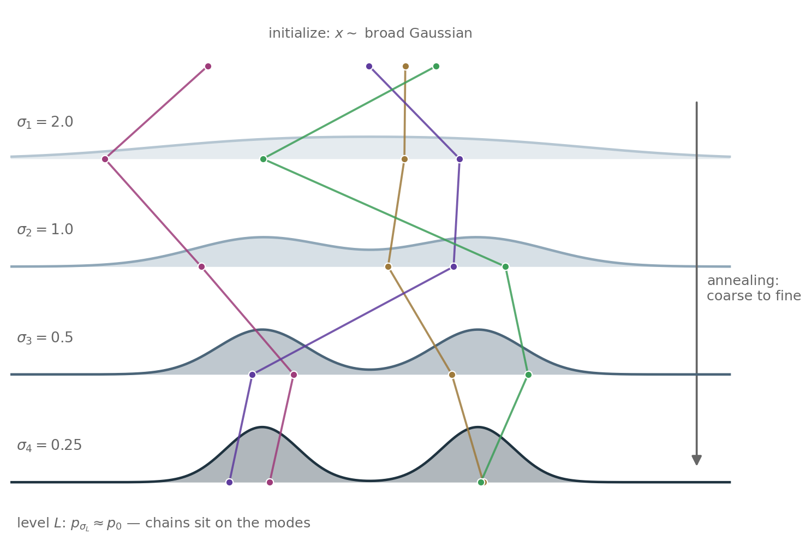
Algorithm 3 uses two constants. \varepsilon_0 is the base Langevin step size, used at the finest level \sigma_L and scaled at level i by \sigma_i^2/\sigma_L^2, so the step stays proportional to the level’s variance. K is the number of Langevin steps run at each level.
Algorithm 3 — Annealed Langevin dynamics [6]:
1: x \sim \mathcal{N}(0, \sigma_1^2 I)
2: for i = 1, \ldots, L do
3: \varepsilon_i = \varepsilon_0 \cdot \sigma_i^2 / \sigma_L^2
4: for k = 1, \ldots, K do
5: z \sim \mathcal{N}(0, I)
6: x = x + \varepsilon_i\, s_\theta(x, \sigma_i) + \sqrt{2\varepsilon_i}\, z
7: end for
8: end for
9: return x
2: for i = 1, \ldots, L do
3: \varepsilon_i = \varepsilon_0 \cdot \sigma_i^2 / \sigma_L^2
4: for k = 1, \ldots, K do
5: z \sim \mathcal{N}(0, I)
6: x = x + \varepsilon_i\, s_\theta(x, \sigma_i) + \sqrt{2\varepsilon_i}\, z
7: end for
8: end for
9: return x
The sampler starts with the maximum value of \sigma_i and walks down the L-level ladder one level at a time. At each level, it runs the Langevin MCMC of Section 2.3.2 with the learned score for that level s_\theta(x, \sigma_i) in place of \nabla_x \log p_{\sigma_i} as drift, starting from the sample the previous level returned. As we start with the maximum value of \sigma_i and go down with the schedule, it slowly sharpens the target from broad noise to the data distribution.
5 Why This Matters
If I have to put my finger on it, there were three decisive conceptual breakthroughs behind modern diffusion generation. The first was the realization that generative modeling could be reformulated in terms of score estimation rather than density estimation, thus eliminating the need to compute the intractable normalization constant of the true data distribution (Section 2.2.3). The second was denoising score matching (Section 3.8), which made the score tractably learnable from data. The third was the unification of variational and score-based methods by Song et al. using SDEs [2]. The first removed the partition-function/normalization barrier, the second made score estimation practical, and the third induced a generic framework which made applying hundred-year-old mathematical toolkits to the diffusion problem possible, opening a plethora of new directions. Once these two fundamental obstacles were overcome and the SDE framework was introduced, much of the subsequent diffusion stack can be understood as an elaboration, scaling, and refinement of this framework. We covered the first two extensively in this post, while post #3 covers the third in full detail.
Where this goes next: Post #3 brings the two sides together. The variational chain of Part 1 and the score-based construction of Parts 2 to 4 turn out to be two discretizations of a single continuous-time object, and once that object is written as an SDE the whole apparatus of stochastic calculus applies to it. The quantities the two routes learn — DDPM’s noise prediction and the score-based model’s score — turn out to be equivalent parameterizations of one underlying object.
How to cite
If you found this useful, please cite as:
@misc{aja2026tworoutes,
title = {Variational Bounds and Score Matching: Two Routes to Denoising Diffusion},
author = {Aja S.},
year = {2026},
url = {https://aja-ekapada.github.io/continuous-time-generative-models/02-variational-vs-score-matching/},
note = {Continuous-Time Generative Models series, post 2}
}References
[1]
J. Ho, A. Jain, and P. Abbeel, “Denoising diffusion probabilistic models,” Advances in Neural Information Processing Systems, vol. 33, pp. 6840–6851, 2020, Available: https://arxiv.org/abs/2006.11239
[2]
Y. Song, J. Sohl-Dickstein, D. P. Kingma, A. Kumar, S. Ermon, and B. Poole, “Score-based generative modeling through stochastic differential equations,” in International conference on learning representations (ICLR), 2021. Available: https://arxiv.org/abs/2011.13456
[3]
A. D. Fokker, “Die mittlere energie rotierender elektrischer dipole im strahlungsfeld,” Annalen der Physik, vol. 348, no. 5, pp. 810–820, 1914.
[4]
M. Planck, “Über einen satz der statistischen dynamik und seine erweiterung in der quantentheorie,” Sitzungsberichte der Preussischen Akademie der Wissenschaften, pp. 324–341, 1917.
[5]
P. Vincent, “A connection between score matching and denoising autoencoders,” Neural Computation, vol. 23, no. 7, pp. 1661–1674, 2011, doi: 10.1162/NECO_a_00142.
[6]
Y. Song and S. Ermon, “Generative modeling by estimating gradients of the data distribution,” in Advances in neural information processing systems (NeurIPS), 2019. Available: https://arxiv.org/abs/1907.05600
[7]
J. Sohl-Dickstein, E. A. Weiss, N. Maheswaranathan, and S. Ganguli, “Deep unsupervised learning using nonequilibrium thermodynamics,” in International conference on machine learning (ICML), 2015. Available: https://arxiv.org/abs/1503.03585
[8]
W. Feller, “On the theory of stochastic processes, with particular reference to applications,” in Proceedings of the [first] berkeley symposium on mathematical statistics and probability, University of California Press, 1949, pp. 403–432.
[9]
D. P. Kingma and M. Welling, “Auto-encoding variational bayes,” in International conference on learning representations, 2014.
[10]
B. D. O. Anderson, “Reverse-time diffusion equation models,” Stochastic Processes and their Applications, vol. 12, no. 3, pp. 313–326, 1982, doi: 10.1016/0304-4149(82)90051-5.
[11]
Y. LeCun, S. Chopra, R. Hadsell, M. Ranzato, and F. J. Huang, “A tutorial on energy-based learning,” in Predicting structured data, MIT Press, 2006.
[12]
G. E. Hinton, “Training products of experts by minimizing contrastive divergence,” Neural Computation, vol. 14, no. 8, pp. 1771–1800, 2002, doi: 10.1162/089976602760128018.
[13]
N. Metropolis, A. W. Rosenbluth, M. N. Rosenbluth, A. H. Teller, and E. Teller, “Equation of state calculations by fast computing machines,” The Journal of Chemical Physics, vol. 21, no. 6, pp. 1087–1092, 1953, doi: 10.1063/1.1699114.
[14]
W. K. Hastings, “Monte carlo sampling methods using markov chains and their applications,” Biometrika, vol. 57, no. 1, pp. 97–109, 1970, doi: 10.1093/biomet/57.1.97.
[15]
H. Kahn and A. W. Marshall, “Methods of reducing sample size in monte carlo computations,” Journal of the Operations Research Society of America, vol. 1, no. 5, pp. 263–278, 1953, doi: 10.1287/opre.1.5.263.
[16]
M. I. Jordan, Z. Ghahramani, T. S. Jaakkola, and L. K. Saul, “An introduction to variational methods for graphical models,” Machine Learning, vol. 37, no. 2, pp. 183–233, 1999, doi: 10.1023/A:1007665907178.
[17]
J. Besag, “Statistical analysis of non-lattice data,” Journal of the Royal Statistical Society: Series D (The Statistician), vol. 24, no. 3, pp. 179–195, 1975, doi: 10.2307/2987782.
[18]
H. Larochelle and I. Murray, “The neural autoregressive distribution estimator,” in Proceedings of the 14th international conference on artificial intelligence and statistics (AISTATS), 2011, pp. 29–37.
[19]
A. Hyvärinen, “Estimation of non-normalized statistical models by score matching,” Journal of Machine Learning Research, vol. 6, pp. 695–709, 2005.
[20]
P. Langevin, “Sur la théorie du mouvement brownien,” Comptes Rendus de l’Académie des Sciences, vol. 146, pp. 530–533, 1908.
[21]
G. O. Roberts and R. L. Tweedie, “Exponential convergence of langevin distributions and their discrete approximations,” Bernoulli, vol. 2, no. 4, pp. 341–363, 1996.
[22]
H. A. Kramers, “Brownian motion in a field of force and the diffusion model of chemical reactions,” Physica, vol. 7, no. 4, pp. 284–304, 1940.
[23]
Y. Song, S. Garg, J. Shi, and S. Ermon, “Sliced score matching: A scalable approach to density and score estimation,” in Uncertainty in artificial intelligence (UAI), 2019. Available: https://arxiv.org/abs/1905.07088
[24]
B. Sriperumbudur, K. Fukumizu, A. Gretton, A. Hyvärinen, and R. Kumar, “Density estimation in infinite dimensional exponential families,” Journal of Machine Learning Research, vol. 18, no. 57, pp. 1–59, 2017.
[25]
Y. Li and R. E. Turner, “Gradient estimators for implicit models,” in International conference on learning representations (ICLR), 2018. Available: https://arxiv.org/abs/1705.07107
[26]
E. Parzen, “On estimation of a probability density function and mode,” The Annals of Mathematical Statistics, vol. 33, no. 3, pp. 1065–1076, 1962.
[27]
B. Efron, “Tweedie’s formula and selection bias,” Journal of the American Statistical Association, vol. 106, no. 496, pp. 1602–1614, 2011, doi: 10.1198/jasa.2011.tm11181.
[28]
Y. Song and S. Ermon, “Improved techniques for training score-based generative models,” in Advances in neural information processing systems, 2020.